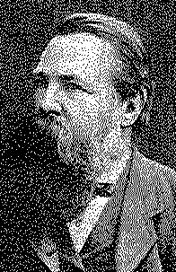

|
FREDERICK ENGELS
THE ORIGIN
|  |
|
Prepared © for the Internet by David J. Romagnolo, djr@marx2mao.org (June 1999)
The present English edition of Engels' The Origin of the Family, Private Property
The notes and indexes are compiled from various sources.
|
|
PREFACE TO THE FIRST EDITION |
3 | |
|
PREFACE TO THE FOURTH EDITION |
6 | |
|
I. |
STAGES OF PREHISTORIC CULTURE |
23 |
|
|
24 | |
|
II. |
THE FAMILY |
31 |
|
III. |
THE IROQUOIS GENS |
98 |
|
IV. |
THE GREEK GENS |
117 |
|
V. |
THE RISE OF THE ATHENIAN STATE |
128 |
|
VI. |
THE GENS AND THE STATE IN ROME |
142 |
|
VII. |
THE GENS AMONG THE CELTS AND GERMANS |
156 |
|
VIII. |
THE FORMATION OF THE STATE AMONG THE GERMANS |
175 |
|
IX. |
BARBARISM AND CIVILIZATION |
190 |
|
| ||
|
217 | ||
|
222 | ||
|
NAME INDEX [not available -- DJR] |
237 | |
|
ETHNOGRAPHICAL INDEX [not available -- DJR] |
247 | |
|
SUBJECT INDEX [not available -- DJR] |
256 | |
THE ORIGIN OF THE FAMILY,
PRIVATE PROPERTY
AND THE STATE
Lewis H. Morgan
|
Written between the end of |
|
Original in German |
page 3
The following chapters are, in a sense, the execution of a bequest. No less a man than Karl Marx had planned to present the results of Morgan's researches in connection with the conclusions of his own -- within certain limits, I may say our -- materialistic examination of history, and thus to make clear their full significance. For Morgan in his own-way had discovered afresh in America the materialistic conception of history discovered by Marx 40 years ago, and in his comparison of barbarism and civilization it had led him, in the main points, to the same conclusions as Marx. And just as the professional economists in Germany were for years as busy in plagiarizing Capital as they were persistent in attempting to kill it by silence, so Morgan's Ancient Society * received precisely the same treatment from the spokesmen of "prehistoric" science in England. My work can offer only a meagre substitute for what my departed friend could no longer accomplish.
page 4
But I have the critical notes which he made to his extensive extracts from Morgan,[*] and I reproduce them here in so far as they apply to the theme.
According to the materialistic conception, the determining factor in history is, in the final instance, the production and reproduction of immediate life. This, again, is of a twofold character. On the one side, the production of the means of subsistence, of food, clothing and shelter and the tools necessary for that production; on the other side, the production of human beings themselves, the propagation of the species. The social institutions under which the people of a particular historical epoch and a particular country live are conditioned by both kinds of production: by the stage of development of labour on the one hand and of the family on the other. The less the development of labour and the more limited the amount of its products, and consequently, the more limited also the wealth of society, the more the social order is found to be dominated by ties of lineage. However, within this structure of society based on ties of lineage the productivity of labour increasingly develops, and with it private property and exchange, differences of wealth, the possibility of utilizing the labour power of others, and hence the basis of class antagonisms: new social elements, which in the course of generations strive to adapt the old social order to the new conditions, until at last their incompatibility brings about a complete upheaval. In the collision of the newly developed social classes, the old society founded on lineage groups is broken up. In its place
page 5
appears a new society, concentrated in the state, the subordinate units of which are no longer lineage groups but territorial groups; a society in which the family structure is completely dominated by the property structure, and in which there now freely develop those class antagonisms and class struggles that have formed the content of all hitherto written history.
It is Morgan's great merit that he has discovered and reconstructed in its main lines this prehistoric basis of our written history, and that in the lineage groups of the North American Indians he has found the key to the most important and hitherto insoluble riddles of earliest Greek, Roman and German history. But his book is not the work of a day. For nearly 40 years he wrestled with his material until he was completely master of it. And that also makes his book one of the few epoch-making works of our time.
In the following presentation, the reader will in general easily distinguish what comes from Morgan and what I have added. In the historical sections on Greece and Rome I have not confined myself to Morgan's evidence, but have added what was available to me. The sections on the Celts and the Germans are in the main my work; Morgan had to rely here almost entirely on secondary sources, and for German conditions -- apart from Tacitus -- on the worthless liberalistic falsifications of Mr. Freeman.[2] The economic arguments, which in Morgan's book were sufficient for his purpose but quite inadequate for mine, have all been reworked by myself. And, finally, I am, of course, responsible for all the conclusions drawn, in so far as Morgan is not expressly cited.
page 6
The earlier large editions of this work have been out of print now for almost half a year, and for some time the publisher has been asking me to prepare a new edition. Until now, more urgent work kept me from doing so. Since the appearance of the first edition seven years have elapsed, during which the study of the primitive forms of the family has made important advances. There was, therefore, plenty to do in the way of improvements and additions; all the more so as the proposed stereotyping of the present text will make any further alterations impossible for some time.
I have accordingly submitted the whole text to a careful inspection and made a number of additions by means of which, I hope, due consideration is paid to the present state of science. I also give in the course of this preface a short review of the development of the history of the family from Bachofen to Morgan; I do so chiefly because the chauvinistically inclined English school of prehistorians is still doing its utmost to kill by silence the revolution which Morgan's discoveries have effected in conceptions of primitive society, while it appropriates his results without the slightest com-
page 7
punction. Elsewhere also this English example is in some cases followed only too closely.
My work has been translated into different languages. First, Italian -- L'origine della famiglia, della proprietà privata e dello stato, versione riveduta dall'autore, di Pasquale Martignetti, Benevento, 1885. Then, Romanian -- Origina familiei, proprietatii private si a statului, traducere de loan Nadejde, in the Jassy periodical Contemporanul, September 1885 to May 1886. Further, Danish -- Familjens, Privatejendommens og Statens Oprindelse, Dansk, af Forfatteren gennemgaaet Udgave, besørget af Gerson Trier, København, 1888. A French translation by Henri Ravé, based on the present German edition, is on the press.
Before the beginning of the 1860s, one cannot speak of a history of the family. In this field, the science of history was still completely under the influence of the Five Books of Moses. The patriarchal form of the family, which was there described in greater detail than anywhere else, was not only assumed without question to be the oldest form, but it was also identified -- minus its polygamy -- with the bourgeois family of today, as if the family had really experienced no historical development at all; at most it was admitted that in primitive times there might have been a period of unregulated sexual relations. It is true that in addition to monogamous marriage, two other forms were known to exist -- polygamy in the Orient and polyandry in India and Tibet; but these three forms could not be arranged in any historical order and merely appeared side by side without any connection. That among some peoples of ancient history, as well as among some savages still alive today, descent was reckoned not from the
page 8
father but from the mother, and that the female line was therefore regarded as alone valid; that among many peoples of the present day marriage is forbidden within certain large groups which at that time had not been closely studied, and that this custom is to be met with in every continent -- these facts were indeed known and fresh instances of them were continually being collected. But nobody knew what to do with them, and even as late as E. B. Tylor's Researches into the Early History of Mankind, etc. (1865)[4] they are listed as mere "curious customs," side by side with the prohibition among some savages against touching burning wood with an iron tool and similar religious nonsense.
The study of the history of the family dates from 1861, from the publication of Bachofen's Mother Right.[5] In this work the author advances the following propositions: (1) That originally humanity lived in unrestricted sexual relations, to describe which Bachofen uses the mistaken term "hetaerism"; (2) that such relations exclude any certainty of paternity, that descent could therefore be reckoned only in the female line, according to mother right, and that this was originally the case amongst all the peoples of antiquity; (3) that consequently women, as mothers, and the only parents of the younger generation that were known with certainty, held a position of high respect and honour which, in Bachofen's conception, was raised to a complete rule by women (gynaeocracy); (4) that the transition to monogamy, where the women belonged to one man exclusively, involved a violation of an ancient religious commandment (that is, actually a violation of the traditional right of the other men to this woman), a violation which had to be expiated, or indulgence for which had to be purchased, by the woman surrendering herself for a limited period.
page 9
Bachofen finds the proofs of these assertions in innumerable passages of ancient classical literature, which he collected with immense industry. According to him, the development from "hetaerism" to monogamy and from mother right to father right is accomplished, as was particularly the case among the Greeks, as the consequence of an advance in religious conceptions, of the insertion of new divinities, representative of the new outlook, among the traditional group of gods, representing the old outlook, so that the latter are more and more pressed into the background by the former. Thus, according to Bachofen, it is not the development of people's actual conditions of life, but the religious reflection of these conditions inside the heads of these same people, which has brought about the historical changes in the relative social position of man and woman. In accordance with this view, Bachofen interprets the Oresteia of Aeschylus as the dramatic representation of the conflict between declining mother right and the new father right that arose and triumphed in the heroic age. For the sake of her paramour, Aegisthus, Clytemnestra slays her husband, Agamemnon, on his return from the Trojan War; but Orestes, her son by Agamemnon, avenges his father's murder by slaying his mother. For this act he is prosecuted by the Erinyes, the demonic guardians of mother right, according to which matricide is the gravest and most inexpiable crime. But Apollo, who through the voice of his oracle had ordered Orestes to this deed, and Athena, who is called upon to give judgment -- the two deities who here represent the new patriarchal order -- take Orestes under their protection; Athena hears both sides. The whole matter of the dispute is briefly summed up in the debate which now takes place between Orestes and the Erinyes. Orestes contends that Clytemnestra has committed a double crime; she has slain
page 10
her husband and thus she has also slain his father. Why should the Erinyes prosecute him and not her, who is by far the more guilty? The answer is striking: "Unrelated by blood was she to the man she slew."[6]
The murder of a man not related by blood, even if he be the husband of the murderess, is expiable and does not concern the Erinyes; their office is solely to punish murder between blood relations, and of such murders the most grave and the most inexpiable, according to mother right, is matricide. Apollo now comes forward in Orestes' defence; Athena calls upon the Areopagites -- the Athenian jurors -- to vote. The votes for Orestes' condemnation and for his acquittal are equal; then Athena, as chief judge, gives her vote for Orestes and acquits him. Father right has triumphed over mother right; the "gods of young descent," as the Erinyes themselves call them, have triumphed over the Erinyes, and the latter then finally allow themselves to be persuaded to take up a new office in the service of the new order.
This new but undoubtedly correct interpretation of the Oresteia is one of the best and finest passages in the whole book, but it proves at the same time that Bachofen believes at least as much as Aeschylus did in the Erinyes, Apollo and Athena; namely, he believes that these divinities performed the miracle of overthrowing mother right and replacing it by father right during the Greek heroic age. That such a conception, which makes religion the decisive lever of world history, must finally end in pure mysticism, is clear. It is therefore a tough and by no means always a rewarding task to plough through Bachofen's thick tome. But all that does not lessen his merit as a pioneer. He was the first to replace the vague phrases about some unknown primitive state of unregulated sexual relations by proofs of the following facts:
page 11
that abundant traces survive in ancient classical literature of a state prior to monogamy among the Greeks and Asiatics when not only did a man have sexual relations with several women, but a woman with several men, without offending against custom; that this custom did not disappear without leaving its traces in the limited surrender which was the price women had to pay for the right to monogamy; that therefore descent could originally be reckoned only in the female line, from mother to mother; that far into the period of monogamy, with its certain or at least acknowledged paternity, the female line was still alone recognized; and that this original position of the mothers, as the only certain parents of their children, secured for them, and thus for their whole sex, a higher social status than women have ever enjoyed since. Bachofen did not put these statements as clearly as this, for he was hindered by his mysticism. But he proved them; and in 1861 that was a real revolution.
Bachofen's massive volume was written in German, the language of the nation which at that time interested itself less than any other in the prehistory of the modern family. Consequently, he remained unknown. His first successor in the same field appeared in 1865, without ever having heard of Bachofen.
This successor was J. E. McLennan, the exact opposite of his predecessor. Instead of a mystic of genius, we have the dry-as-dust jurist; instead of the exuberant imagination of a poet, the plausible arguments of a barrister pleading his case. McLennan finds among many savage, barbarian and even civilized peoples of ancient and modern times a form of concluding a marriage in which the bridegroom, alone or with his friends, must carry off the bride from her relations by a show of force. This custom must be the survival of an earlier
page 12
custom when the men of one tribe did in fact carry off their wives by force from other tribes. What was the origin of this "marriage by capture"? So long as men could find enough women in their own tribe, there was no reason whatever for it. We find, however, no less frequently that among undeveloped peoples there are certain groups (which in 1865 were still often identified with the tribes themselves) within which marriage is forbidden, so that the men are obliged to take their wives, and the women their husbands, from outside the group; whereas among other peoples the custom is that the men of one group must take their wives only from within their own group. McLennan calls the first peoples "exogamous" and the second "endogamous"; he then promptly proceeds to construct a rigid antithesis between exogamous and endogamous "tribes." And although his own investigations into exogamy force the fact under his nose that in many, if not in most or even in all, cases, this antithesis exists only in his own imagination, he nevertheless makes it the basis of his whole theory. According to this theory, exogamous tribes can only obtain their wives from other tribes; and in the permanent state of war between tribe and tribe, which corresponds to savagery, these wives could only be obtained by capture.
McLennan then goes on to ask: Whence this custom of exogamy? The conception of consanguinity and incest could not have anything to do with it, he says, for these things only came much later. But another common custom among savages might -- the custom of killing female children immediately after birth. This caused a surplus of men in each individual tribe, of which the inevitable and immediate consequence was that several men possessed a wife in common: polyandry. And this had the further consequence that it was known who was the mother of a child, but not who its father was: hence
page 13
kinship reckoned only in the female line, with exclusion of the male line -- mother right. And a second consequence of the scarcity of women within a tribe -- a scarcity which polyandry mitigated, but did not remove -- was precisely this systematic, forcible abduction of women from other tribes.
As exogamy and polyandry are referable to one and the same cause -- want of balance between the sexes -- we are forced to regard all the exogamous races as having originally been polyandrous. . . . Therefore we must hold it to be beyond dispute that among exogamous races the first system of kinship was that which recognized blood-ties through mothers only. (McLennan, Studies in Ancient History, 1886. Primitive Marriage, p. 124.)[7]
It is McLennan's merit that he directed attention to the general occurrence and great importance of what he calls exogamy. He did not by any means discover the existence of exogamous groups; still less did he understand it. Besides the earlier, scattered notes of many observers (these were McLennan's sources), Latham (Descriptive Ethnology, 1859) had given a detailed and accurate description of this institution among the Magars in India, and had said that it was very widespread and occurred in all parts of the world -- a passage which McLennan himself cites. And our Morgan, in 1847, in his letters on the Iroquois (in the American Review ) and in 1851 in The League of the Iroquois,[8] had already demonstrated the existence of exogamous groups among this tribe and had given an accurate account of them; whereas McLennan, as we shall see, wrought greater confusion here with his lawyer's mind than Bachofen wrought in the field of mother right with his mystical fantasy. It is also a merit of McLennan that he recognized matrilineal descent as the original system, though he was here anticipated by Bachofen, as he later acknowledged. But McLennan is not clear on this either; he always speaks of "kinship through females only,"
page 14
and this term, which is correct for an earlier stage, he continually applies to later stages of development when descent and inheritance were indeed still traced exclusively through the female line, but when kinship on the male side was also recognized and expressed. There you have the narrowness of the jurist, who fixes on a rigid legal term and goes on applying it unchanged when changed conditions have made it applicable no longer.
Apparently McLennan's theory, plausible though it was, did not seem any too well founded even to its author. At any rate, he himself is struck by the fact that "it is observable that the form of [apparent] capture is now most distinctly marked and impressive just among those races which have male kinship [should be 'descent in the male line']."* (Ibid., p. 140.) And again: "It is a curious fact that nowhere now, that we are aware of, is infanticide a system where exogamy and the earliest form of kinship coexist." (Ibid., p. 146.) Both these facts flatly contradict his method of explanation, and he can only meet them with new and still more complicated hypotheses.
Nevertheless, his theory found great applause and support in England. McLennan was here generally regarded as the founder of the history of the family and the leading authority on the subject. However many exceptions and variations were found in individual cases, the antithesis he set up between exogamous and endogamous "tribes" continued to stand as the recognized foundation of the prevailing view, and became the blinders which made impossible any free survey of the field of investigation and thus any decisive advance. Against
page 15
McLennan's exaggerated reputation in England -- and the English fashion is copied elsewhere -- it becomes a duty to set down the fact that he has done more harm with his completely mistaken antithesis between exogamous and endogamous "tribes" than he has done good by his research.
Facts were now already coming to light in increasing number which did not fit into his neat framework. McLennan knew only three forms of marriage: polygyny, polyandry and monogamy. But once attention had been directed to this point, more and more proofs were found that there existed among undeveloped peoples forms of marriage in which a number of men had a number of women in common, and Lubbock (The Origin of Civilization, 1870)[9] recognized this group marriage ("communal marriage") as a historical fact.
Immediately afterwards, in 1871, Morgan came forward with new and, in many ways, decisive evidence. He had convinced himself that the particular system of kinship in force among the Iroquois was common to all the aboriginal inhabitants of the United States and therefore extended over a whole continent, although it directly contradicted the degrees of relationship arising out of the system of marriage as actually practised by these peoples. He then induced the American Federal government to collect information about the systems of kinship among the other peoples of the world and to send out for this purpose tables and lists of questions prepared by himself. He discovered from the replies: (1) that the system of kinship of the American Indians was also in force among numerous peoples in Asia and, in a somewhat modified form, in Africa and Australia; (2) that its complete explanation was to be found in a form of group marriage which was just dying out in Hawaii and other Australasian islands; and (3) that, however, side by side with this form of marriage a system
page 16
of kinship was in force in the same islands which could only be explained through a still more primitive, now extinct, form of group marriage. He published the collected evidence, together with the conclusions he drew from it, in his Systems of Consanguinity and Affinity, 1871,[10] and thus carried the debate onto an infinitely more comprehensive field. By starting from the systems of kinship and reconstructing from them the corresponding forms of the family, he opened a new line of research and extended our range of vision into the prehistory of humanity. If this method proved to be sound, McLennan's pretty theories would be completely demolished.
McLennan defended his theory in a new edition of Primitive Marriage (Studies in Ancient History, 1876). Whilst he himself constructs a highly artificial history of the family out of pure hypotheses, he demands from Lubbock and Morgan not merely proofs for every one of their statements, but proofs as indisputably valid as if they were to be submitted in evidence in a Scottish court of law. And this is the man who, from Tacitus' report on the close relationship between maternal uncle and sister's son among the Germans (Germania, Chap. 20), from Caesar's report that the Britons in groups of ten or twelve possessed their wives in common, and from all the other reports of classical authors on community of wives among barbarians, calmly draws the conclusion that all these peoples lived in a state of polyandry! One might be listening to a prosecuting counsel who can allow himself every liberty in arguing his own case, but demands from defending counsel the most formal, legally valid proof for every word.
He maintains that group marriage is pure imagination, and by so doing falls far behind Bachofen. He declares that Morgan's systems of kinship are mere codes of conventional politeness, the proof being that the Indians also address a
page 17
stranger or a white man as "brother" or "father." One might as well say that the terms "father," "mother," "brother" and "sister" are mere meaningless forms of address because Catholic priests and abbesses are addressed as "father" and "mother," and because monks and nuns, and even freemasons and members of English trade unions and associations in solemn session, are addressed as "brother" and "sister." In a word, McLennan's defence was miserably feeble.
But on one point he had still not been assailed. The antithesis between exogamous and endogamous "tribes" on which his whole system rested not only remained unshaken, but was even universally acknowledged as the keystone of the whole history of the family. McLennan's attempt to explain this antithesis might be inadequate and in contradiction with the facts he himself had cited. But the antithesis itself, the existence of two mutually exclusive types of self-sufficient and independent tribes, of which the one type took their wives from within the tribe, while the other type absolutely forbade it -- that was incontrovertible gospel. Compare, for example, Giraud-Teulon's Origin of the Family (1874)[11] and even Lubbock's Origin of Civilization (fourth edition, 1882).
This is the point where Morgan begins with his main work, Ancient Society (1877),[12] the work that underlies the present study. What Morgan had only dimly guessed in 1871 is now developed in full consciousness. There is no antithesis between endogamy and exogamy; up to the present, the existence of exogamous "tribes" has not been demonstrated anywhere. But at the time when group marriage still prevailed -- and in all probability it prevailed everywhere at some time -- the tribe was subdivided into a number of groups related by blood on the mother's side, gentes, within which it was strictly for-
page 18
bidden to marry, so that the men of a gens, though they could take their wives from within the tribe and generally did so, were compelled to take them from outside their gens. Thus while each gens was strictly exogamous, the tribe embracing all the gentes was no less endogamous. This finally disposed of the last remains of McLennan's artificial constructions.
But Morgan did not rest here. Through the gens of the American Indians, he was enabled to make his second, decisive advance in his held of research. In this gens, organized according to mother right, he discovered the primitive form out of which had developed the later gens organized according to father right, the gens as we find it among the ancient civilized peoples. The Greek and Roman gens, hitherto the riddle for all historians, now found its explanation in the Indian gens, and a new foundation was thus laid for the whole of primitive history.
This rediscovery of the primitive matrilineal gens as the stage preceding the patrilineal gens of civilized peoples has the same importance for primitive history as Darwin's theory of evolution has for biology and Marx's theory of surplus value for political economy. It enabled Morgan to outline for the first time a history of the family in which at least the classic stages of development, by and large, are provisionally defined so far as the material now known permits. That this opens a new epoch in the treatment of primitive history must be clear to everyone. The matrilineal gens has become the pivot on which the whole science turns; since its discovery we know where to look and what to look for in our research, and how to arrange the results. And, consequently, since Morgan's book, progress in this field has been made at a far greater speed.
page 19
Morgan's discoveries are now generally recognized, or rather appropriated, even by prehistorians in England. But hardly one of them has the honesty to admit that it is to Morgan that we owe this revolution in our ideas. In England they do their utmost to kill his book by silence, and dispose of its author with condescending praise for his earlier achievements; they niggle zealously over details of his exposition and remain obstinately silent about his really great discoveries. The original edition of Ancient Society is out of print; in America there is no sale for such things; in England, it seems, the book was systematically suppressed, and the only edition of this epoch-making work still circulating in the book trade is -- the German translation.
Why this reserve? It is difficult not to see in it a conspiracy of silence; especially so in view of the numerous quotations for politeness' sake and other tokens of camaraderie which abound in the works of our recognized prehistorians. Is it, perhaps, because Morgan is an American, and for the English prehistorians it goes sorely against the grain that, despite their highly creditable industry in collecting material, they should be dependent for their general points of view in the arrangement and grouping of this material, in short, for their ideas, on two foreigners of genius, Bachofen and Morgan? They might put up with the German -- but the American? Every Englishman turns patriotic when he comes up against an American, and of this I saw highly entertaining instances in the United States.[13] Moreover, McLennan was, so to speak, the officially appointed founder and leader of the English prehistoric school. It was almost a matter of good form among prehistorians to speak of his artificially constructed historical series -- child murder, polyandry, marriage by capture, matriarchal family -- in tones only of profoundest respect.
page 20
The slightest doubt in the existence of exogamous and endogamous "tribes" of absolute mutual exclusiveness was considered rank heresy. Morgan had committed a kind of sacrilege in dissolving all these hallowed dogmas into thin air. Into the bargain, he had done it in such a way that it only needed saying to carry immediate conviction; so that the McLennanites, who had hitherto been helplessly reeling to and fro between exogamy and endogamy, could only beat their brows and exclaim: "How could we be such fools as not to think of that for ourselves long ago!"
As if these crimes had not already left the official school with the option only of coldly ignoring him, Morgan filled the measure to overflowing by not merely criticizing civilization, the society of commodity production, the basic form of present-day society, in a manner reminiscent of Fourier, but also by speaking of a future transformation of this society in words which Karl Marx might have used. He had therefore amply merited McLennan's indignant reproach that "the historical method is antipathetical to Mr. Morgan's mind,"[14] and its echo as late as 1884 from Mr. Professor Giraud-Teulon of Geneva. In 1874 (Origin of the Family ) this same gentleman was still groping helplessly in the maze of the McLennanite exogamy, from which Morgan had to come and rescue him!
Of the other advances which primitive history owes to Morgan, I do not need to speak here; they are sufficiently discussed in the course of this study. The 14 years which have elapsed since the publication of his chief work have greatly enriched the material available for the study of the history of primitive human societies. The anthropologists, travellers and prehistorians by profession have now been joined by the comparative jurists, who have contributed either new material or new points of view. As a result, some of Morgan's hypotheses
page 21
pertaining to particular points have been shaken or even disproved. But not one of the great leading ideas of his work has been ousted by this new material. The order which he introduced into primitive history still holds in its main lines today. We can even say that it is winning increasing recognition to the same degree in which Morgan's authorship of this great progress is carefully concealed.*
Frederick Engels
London, June 16, 1891
page 23
Morgan was the first person with expert knowledge to attempt to introduce a definite order into the prehistory of humanity; so long as no important additional material makes changes necessary, his classification will undoubtedly remain in force.
Of the three main epochs -- savagery, barbarism and civilization, he is concerned, of course, only with the first two and the transition to the third. He divides both savagery and barbarism into lower, middle and upper stages according to the progress made in the production of food; for, he says:
Upon their skill in this direction, the whole question of human supremacy on the earth depended. Mankind are the only beings who may be said to have gained an [almost] absolute control over the production of food. . . . It is accordingly probable that the great epochs of human progress have been identified, more or less directly, with the enlargement of the sources of subsistence.[15]
The development of the family takes a parallel course, but here the periods are not divided by such striking marks.
page 24
(a) Lower stage. Childhood of the human race. People still lived in their original habitat, in tropical or subtropical forests, and were partially at least tree-dwellers, for otherwise survival among large beasts of prey cannot be explained. Fruit, nuts and roots served for food. The development of articulate speech is the main result of this period. None of the peoples that became known during the historical period were any longer in this primitive state. Though this stage may have lasted thousands of years, we have no direct evidence to prove its existence; but once the evolution of man from the animal kingdom is admitted, such a transitional stage must necessarily be assumed.
(b) Middle stage. Begins with the utilization of fish for food (including crabs, mussels and other aquatic animals) and with the use of fire. The two are complementary, since food fish becomes fully utilizable only by the use of fire. With this new source of nourishment, men became independent of climate and locality; even as savages, they could, by following the rivers and coasts, spread over most of the earth. Proof of these migrations is the distribution over every continent of the crudely worked, unpolished flint tools of the earlier Stone Age, the so-called "paleoliths," all or most of which date from this period. Settlement in new areas, the constantly active urge for discovery, and the ability to produce fire by friction made available new kinds of food: farinaceous roots and tubers, for instance, were baked in hot ashes or in baking pits (ground ovens). With the invention of the first weapons, club and spear, game could sometimes be added to the fare. But the tribes which figure in books as living entirely, that is, exclusively, by hunting never existed in reality; the yield of the
page 25
hunt was far too precarious. At this stage, owing to the continual uncertainty of food supplies, cannibalism seems to have arisen and was practised from then onwards for a long time. The Australian aborigines and many of Polynesians are still in this middle stage of savagery today.
(c) Upper stage. Begins with the invention of the bow and arrow, whereby game became a regular source of food, and hunting one of the normal branches of work. Bow, string and arrow already constitute a very complex instrument, whose invention presupposes long, accumulated experience and sharpened intelligence and therefore knowledge of many other inventions as well. Comparing the peoples acquainted with the bow and arrow but not yet with pottery (from which Morgan dates the transition to barbarism), we in fact find already some beginnings of settlement in villages and some control over the production of means of subsistence; we find wooden vessels and utensils, finger-weaving (without looms) with filaments of bark, plaited baskets of bast or reeds, and polished (neolithic) stone tools. For the most part also, the use of fire and the stone axe have already provided the dug-out canoe and sometimes beams and planks for house-building. We find all these advances, for instance, among the Indians of northwest America, who are acquainted with the bow and arrow but not with pottery. The bow and arrow was for savagery what the iron sword was for barbarism and fire-arms for civilization -- the decisive weapon.
(a) Lower stage. Dates from the introduction of pottery. In many cases it can be proved, and in all it is probable, that
page 26
the first pots originated from the habit of covering baskets or wooden vessels with clay to make them fireproof; in this way it was soon discovered that moulded clay answered the purpose without any inner vessel.
Thus far we can regard the course of development as being generally valid for all peoples at a given period without distinction of place. With the beginning of barbarism, however, we reach a stage when the difference in the natural endowments of the two hemispheres of the earth comes into play. The characteristic feature of the period of barbarism is the domestication and breeding of animals and the cultivation of plants. Now, the Eastern Hemisphere, the so-called Old World, possessed nearly all the animals adaptable to domestication, and all the varieties of cultivable cereals except one; the Western Hemisphere, America, had no mammals that could be domesticated except the llama, which, moreover, was only found in one part of South America, and of all the cultivable cereals only one, though that was the best, namely, maize. Owing to these differences in natural conditions, the population of each hemisphere went its own way, and different landmarks divide the particular stages in each of the two cases.
(b) Middle stage. Begins in the Eastern Hemisphere with the domestication of animals; in the Western, with the cultivation, by means of irrigation, of plants for food, and with the use of adobe (sun-dried) bricks and stone for building.
We shall begin with the Western Hemisphere, as here this stage was never superseded until the European conquest.
At the time when they were discovered, the Indians at the lower stage of barbarism (comprising all those living east of the Mississippi) were already practising some horticulture of maize and possibly also of squash, melons and other garden plants, from which they obtained a very substantial part of
page 27
their food. They lived in wooden houses in villages protected by palisades. The tribes in the northwest, particularly those in the region of the Columbia River, were still at the upper stage of savagery and acquainted neither with pottery nor with any form of plant cultivation. The so-called Pueblo Indians of New Mexico,[16] however, and the Mexicans, Central Americans and Peruvians at the time of the Conquest were at the middle stage of barbarism. They lived in houses like fortresses, made of adobe brick or of stone, and cultivated maize and other edible plants, varying according to locality and climate, in artificially irrigated plots of ground, which supplied their main source of food; and they had even domesticated some animals -- the turkey and other birds by the Mexicans, the llama by the Peruvians. They could also work metals, with the exception of iron for which reason they were still unable to dispense with stone weapons and tools. The Spanish Conquest then cut short any further independent development.
In the Eastern Hemisphere the middle stage of barbarism began with the domestication of animals providing milk and meat, but plant cultivation seems to have remained unknown far into this period. It was, apparently, the domestication and breeding of animals and the formation of herds of considerable size that led to the differentiation of the Aryans and Semites from the mass of barbarians. The European and Asiatic Aryans still have the same names for cattle, but this is hardly ever the case with the names for the cultivated plants.
In suitable localities, the formation of herds led to a pastoral life: the Semites lived upon the grassy plains of the Euphrates and the Tigris, and the Aryans upon those of India, of the Oxus and the Jaxartes, and of the Don and the Dnieper. It must have been on the borders of such pasture lands that
page 28
animals were first domesticated. To later generations, consequently, the pastoral tribes appear to have come from regions which, so far from being the cradle of mankind, were almost uninhabitable for their savage ancestors and even for people at the lower stage of barbarism. But having once accustomed themselves to pastoral life in the grassy plains of the rivers, these barbarians of the middle stage would never have dreamed of returning willingly to the native forests of their ancestors. Even when they were forced further to the north and west, the Semites and Aryans could not move into the forest regions of western Asia and of Europe until they became able, by cultivation of grain, to feed and especially to winter their herds on this less favourable land. It is more than probable that here the cultivation of grain originated from the need for cattle fodder and only later became important as a human food supply.
The plentiful supply of milk and meat and especially the beneficial effect of these foods on the growth of the children account perhaps for the better development of the Aryan and Semitic races. It is a fact that the Pueblo Indians of New Mexico, who are reduced to an almost entirely vegetarian diet, have a smaller brain than the Indians at the lower stage of barbarism, who eat more meat and fish. In any case, cannibalism now gradually dies out, surviving only as a religious act or, what is here almost the same thing, as a means of working magic.
(c) Upper stage. Begins with the smelting of iron ore and passes into civilization with the invention of alphabetic writing and its use for literary records. This stage (as we have seen, only the Eastern Hemisphere passed through it independently) is richer in advances in production than all the
page 29
preceding stages together. To it belong the Greeks of the heroic age, the tribes of Italy shortly before the foundation of Rome, the Germans of Tacitus and the Norsemen of the Viking age.
Above all, we now first meet the iron ploughshare drawn by cattle, which made large-scale agriculture, the cultivation of fields, possible and hence a practically unrestricted food supply under the then prevailing conditions. Then came the clearance of forest land for tillage and pasture, which in turn was impossible on a large scale without the iron axe and the iron spade. Population rapidly increased in number, and in small areas became dense. Prior to field agriculture, only very exceptional conditions would have allowed half a million people to be united under a single central direction, probably this never occurred.
We find the upper stage of barbarism at its zenith in the Homeric poems, particularly in the Iliad. Developed iron tools, the bellows, the hand-mill, the potter's wheel, the making of oil and wine, well-developed metal-working which had become an artistic craft, the wagon and the war-chariot, shipbuilding with beams and planks, the beginnings of architecture as an art, walled cities with towers and battlements, the Homeric epic and a complete mythology -- these are the chief legacy brought by the Greeks from barbarism into civilization. When we compare the descriptions which Caesar and even Tacitus give of the Germans,[17] who stood at the beginning of the cultural stage from which the Homeric Greeks were just preparing to make the next advance, we realize how rich was the development of production within the upper stage of barbarism.
The sketch which I have given here, following Morgan, of the development of mankind through savagery and barbarism
page 30
to the beginnings of civilization, is already rich enough in new features; what is more, they cannot be disputed since they are drawn directly from production. Yet my sketch will seem flat and feeble compared with the picture to be unrolled at the end of our travels; only then will it be possible to give a full view of the transition from barbarism to civilization and the striking contrasts between the two. For the time being, Morgan's division may be summarized thus: Savagery -- the period in which man's appropriation of products in their natural state predominates; the products of human art are chiefly auxiliary instruments in this appropriation. Barbarism -- the period during which man learns to breed domestic animals and to practise agriculture, and acquires methods of increasing the supply of natural products by human activity. Civilization -- the period in which man learns the further reworking of the products of nature, the period of industry proper and of art.
page 31
Morgan, who spent the greater part of his life among the Iroquois Indians -- who dwell to this day in New York State -- and was adopted into one of their tribes (the Senecas), found in use among them a system of kinship which was in contradiction to their actual family relationships. There prevailed among them a form of monogamy easily terminable on both sides, which Morgan calls the "syndyasmian or pairing family." The issue of the married pair was therefore known and recognized by everybody: there could be no doubt about whom to call father, mother, son, daughter, brother, sister. But these names were actually used quite differently. The Iroquois man calls not only his own children his sons and daughters, but also the children of his brothers; and they call him father. The children of his sisters, however, he calls his nephews and nieces, and they call him their uncle. The Iroquois woman, on the other hand, calls her sisters' children, as well as her own, her sons and daughters, and they call her mother. But her brothers' children she calls her nephews and nieces, and she
page 32
is known as their aunt. Similarly, the children of brothers call one another brother and sister, and so do the children of sisters. A woman's own children and the children of her brother, on the other hand, call one another cousins. And these are not mere empty names, but expressions of actually prevailing conceptions of nearness and remoteness, of equality and difference in the degrees of consanguinity: these conceptions serve as the foundation of a fully elaborated system of kinship through which several hundred different relationships of one individual can be expressed. What is more, this system is not only in full force among all American Indians (no exception has been found up to the present), but also retains its validity almost unchanged among the aborigines of India, the Dravidian tribes in the Deccan and the Gaura tribes in Hindustan. To this day the Tamils of southern India and the Seneca-Iroquois Indians in New York State still express more than two hundred relations of kinship in the same manner. And among these tribes of India, as among all the American Indians, the actual kinship relations arising out of the existing form of the family contradict the kinship system.
How is this to be explained? In view of the decisive part played by kinship in the social structure of all savage and barbarian peoples, the importance of a system so widespread cannot be dismissed with phrases. When a system is general throughout America and also exists in Asia among peoples of a quite different race, when numerous instances of it are found with greater or less variation in every part of Africa and Australia, then that system has to be historically explained, not talked out of existence, as McLennan, for example, tried to do. The names father, child, brother and sister are no mere honorific titles; they involve quite definite and very serious mutual obligations which together make up an essential part
page 33
of the social constitution of the peoples in question. The explanation was found. In the Sandwich Islands (Hawaii) there still existed in the first half of the 19th century a form of family in which the fathers and mothers, brothers and sisters, sons and daughters, uncles and aunts, nephews and nieces were exactly what is required by the American and ancient Indian system of kinship. But now comes a strange thing. Once again, the system of kinship in force among the Hawaiians did not correspond to the actual form of the Hawaiian family. For in Hawaii all children of brothers and sisters are without exception brothers and sisters of one another and are considered to be the common children not only of their mother and her sisters or of their father and his brothers, but of all the brothers and sisters of both their parents without distinction. While, therefore, the American system of kinship presupposes a more primitive form of the family which has disappeared in America, but still actually exists in Hawaii, the Hawaiian system of kinship, on the other hand, points to a still earlier form of the family which, though we can nowhere prove it to be still in existence, nevertheless must have existed; for otherwise the corresponding system of kinship could never have arisen.
The family [says Morgan] represents an active principle. It is never stationary, but advances from a lower to a higher form as society advances from a lower to a higher condition. . . . Systems of consanguinity, on the contrary, are passive, recording the progress made by the family at long intervals apart, and only changing radically when the family has radically changed.[18]
"And," adds Marx, "the same is true of political, juridical, religious and philosophical systems in general." While the family lives on, the system of kinship ossifies; while the system survives by force of habit, the family outgrows it.
page 34
But just as Cuvier could with certainty deduce from the marsupial bones of an animal skeleton found near Paris that it belonged to a marsupial animal and that extinct marsupial animals once lived there, so with the same certainty we can deduce from a historically transmitted system of kinship that an extinct form of the family once existed which corresponded to it.
The systems of kinship and the forms of the family we have just mentioned differ from those prevailing today in the fact that every child has several fathers and mothers. In the American system of kinship, to which the Hawaiian family corresponds, brother and sister cannot be the father and mother of the same child; but the Hawaiian system of kinship, on the contrary, presupposes a family in which this was the rule. Here we find ourselves among a series of forms of the family which directly contradict those hitherto generally assumed to be alone valid. The traditional view knows only monogamy, with, in addition, polygamy on the part of individual men, and at the very most polyandry on the part of individual women; as is the way with moralizing philistines, it conceals the fact that in practice these barriers raised by official society are quietly but unblushingly ignored. The study of primitive history, however, reveals conditions where the men live in polygamy and their wives in polyandry at the same time, and their common children are therefore considered common to them all -- and these conditions in their turn undergo a long series of changes before they finally end in monogamy. The trend of these changes is to narrow more and more the circle of people comprised within the common bond of marriage, which was originally very wide, until at last it includes only the single pair, the dominant form of marriage today.
page 35
Reconstructing thus the past history of the family, Morgan, in agreement with most of his colleagues, arrives at a primitive stage when unrestricted sexual relations prevailed within the tribe, every woman belonging equally to every man and every man to every woman. Since the 18th century there had been talk of such a primitive condition, but only in general phrases. Bachofen was the first -- and this is one of his great merits -- to take the existence of such a condition seriously and to search for its traces in historical and religious traditions.[5] Today we know that the traces he found do not lead back to a social stage of unregulated sexual relations, but to a much later form -- namely, group marriage. The earlier primitive social stage, if it ever existed, belongs to such a remote epoch that we can hardly expect to find direct proof of its former existence in social fossils among backward savages. Bachofen's merit consists in having brought this question to the forefront for examination.*
Lately it has become fashionable to deny the existence of this initial stage in human sexual life. Humanity must be spared this "shame." It is pointed out that all direct proof of such a stage is lacking, and particular appeal is made to the evidence from the rest of the animal world; for, even among
page 36
animals, according to the numerous facts collected by Letourneau (The Evolution of Marriage and the Family, 1888),[19] complete unrestrictedness in sexual relations marks a low stage of development. But the only conclusion I can draw from all these facts, so far as man and his primitive conditions of life are concerned, is that they prove nothing whatever. That vertebrates pair up for a considerable period is sufficiently explained by physiological causes -- in the case of birds, for example, by the female's need of help during the brooding period; examples of faithful monogamy among birds prove nothing about man, for the simple reason that men are not descended from birds. And if strict monogamy is the height of all virtue, then the palm must go to the tapeworm, which has a complete set of male and female sexual organs in each of its 50 to 200 proglottides, or segments, and spends its whole life copulating in all its segments with itself. Confining ourselves to mammals, however, we find all forms of sexual life -- unrestrictedness, indications of group marriage, polygyny, monogamy. Polyandry alone is lacking -- it took human beings to achieve that. Even our nearest relations, the quadrumana, exhibit every possible variation in the grouping of males and females; and if we narrow it down still more and consider only the four anthropoid apes, all that Letourneau has to say about them is that they are sometimes monogamous, sometimes polygamous, while Saussure, quoted by Giraud-Teulon, maintains that they are monogamous.[20] The more recent assertions of the monogamous habits of the anthropoid apes which are cited by Westermarck (The History of Human Marriage, London, 1891) are also very far from proving anything. In short, our evidence is such that honest Letourneau admits: "In regard to mammals, there is no strict relation between the degree of intellectual development and the form of sexual
page 37
union."[21] And Espinas (Animal Societies, 1877)[22] says in so many words:
The herd is the highest social group which we can observe among animals. It is composed, so it appears, of families, but from the start the family and the herd are in conflict with one another and develop in inverse proportion.
As the above shows, we know practically nothing definite about the family and other social groupings of the anthropoid apes; the evidence is flatly contradictory. This is not to be wondered at either. How contradictory and how much in need of critical examination and sifting are the reports in our possession concerning even savage human tribes! But ape societies are far more difficult to observe than human ones. For the present, therefore, we must reject any conclusion drawn from such completely unreliable reports.
The quotation from Espinas, however, provides us with a better clue. Among the higher animals the herd and the family are not complementary to one another, but contradictory. Espinas shows very nicely how the jealousy of the males during the mating season loosens the ties of every gregarious herd or temporarily breaks it up.
Where the family bond is close, herds form only in exceptional cases. On the other hand, where free sexual intercourse or polygamy prevails, the herd comes into being almost spontaneously. . . . Before a herd can be formed, family ties must be loosened and the individual must have become free again. This is the reason why organized flocks are so rarely found among birds. . . . We find more or less organized societies among mammals, however, precisely because here the individual is not absorbed by the family. . . . In its first growth, therefore, the common feeling of the herd has no greater enemy than the common feeling of the family. We state it without hesitation: only by absorbing families which had undergone a radical change could a social form higher than the family have developed; at the same time, these families were thereby enabled later to constitute themselves afresh under infinitely more favourable
page 38
circumstances. (Espinas, op. cit., quoted by Giraud-Teulon, Origin of Marriage and the Family, 1884, pp. 518-20.)
Here we see that animal societies are, after all, of some value for drawing retrospective conclusions about human societies; but the value is only negative. So far as our evidence goes, the higher vertebrates know only two forms of family -- polygyny or separate couples; each form allows only one adult male, only one husband. The jealousy of the male, which both consolidates and isolates the family, sets the animal family in opposition to the herd. The jealousy of the males either prevents the herd, the higher social form, from coming into existence, or weakens its cohesion, or breaks it up during the mating period; at best, it arrests its development. This alone is sufficient proof that animal families and primitive human society are incompatible, and that when primitive men were working their way up out of the animal state, they either had no family at all or at most a form that does not occur among animals. In small numbers, an animal so defenceless as evolving man, might struggle along even in conditions of isolation, with the single pair as the highest form of gregariousness, such as Westermarck, following the reports of hunters, attributes to the gorillas and the chimpanzees. For development beyond the level of the animals, for the achievement of the greatest advance nature can show, something more was needed: the power of defence lacking to the individual had to be made good by the united strength and co-operation of the herd. To explain the transition to humanity from conditions such as those in which the anthropoid apes live today would be quite impossible; it looks much more as if these apes had strayed off the line of evolution and were gradually dying out or at least on the decline. That alone is sufficient ground for rejecting all conclusions based on parallels drawn
page 39
between their forms of family and those of primitive man. Mutual toleration among the adult males, freedom from jealousy, was the first condition for the formation of those larger, permanent groups in which alone animals could become human. And what, in fact, do we find to be the oldest and most primitive form of family whose historical existence we can indisputably prove and which in one or two parts of the world we can still study today? Group marriage, the form in which whole groups of men and whole groups of women mutually possess one another, and which leaves little room for jealousy. And at a later stage of development we find the exceptional form of polyandry, which flies even more in the face of all feelings of jealousy and is therefore unknown among animals. But, as all known forms of group marriage are accompanied by such peculiarly complicated circumstances that they necessarily point to earlier and simpler forms of sexual relations, and therefore in the last resort to a period of unregulated intercourse corresponding to the transition from the animal to the human, the references to animal marriages only bring us back to the very point from which we were to be led away for good and all.
What, then, does unregulated sexual relations really mean? It means that the prohibitive barriers which are or have been in force did not prevail. We have already seen the barrier of jealousy go down. If there is one thing certain, it is that the feeling of jealousy develops relatively late. The same is true of the conception of incest. Not only were brother and sister originally man and wife, sexual intercourse between parents and children is still permitted among many peoples today. Bancroft (The Native Races of the Pacific States of North America, 1875, Vol. I) testifies to it among the Kaviaks on the Bering Straits, the Kaniagmiut near Alaska, and the Tin-
page 40
nehs in the interior of British North America. Letourneau compiled reports of it among the Chippewa Indians, the Cucus in Chile, the Caribs, the Karens on the Indo-Chinese Peninsula -- to say nothing of the stories told by the ancient Greeks and Romans about the Parthians, Persians, Scythians, Huns, and so on. Before incest was invented -- and it is an invention, a most valuable one, too -- sexual intercourse between parents and children did not arouse any more repulsion than sexual intercourse between other persons of different generations, which occurs today even in the most philistine countries without exciting any great horror; even old "maids" of over 60, if they are rich enough, sometimes marry young men in their 30's. But if we consider the most primitive known forms of family apart from the conceptions of incest associated with them -- conceptions which are totally different from ours and frequently in direct contradiction to them -- then we encounter a form of sexual relations which can only be described as lawless -- lawless in so far as the restrictions later established by custom did not yet exist. But it does not necessarily follow from this that a higgledly-piggledly mixed mating was in daily practice. Separate pairing for a limited period was by no means excluded, just as in the cases of group marriages today the majority of relationships are of this character. And when Westermarck, the latest writer to deny the existence of such a primitive state, applies the term "marriage" to every relationship in which the two sexes remain paired up until the birth of the offspring, we must point out that this kind of marriage can very well occur under the conditions of unregulated intercourse without contradicting the principle of unregulatedness -- the absence of any barrier imposed by custom on sexual intercourse. Westermarck, however, takes the standpoint that promiscuity involves "a suppression of in-
page 41
dividual inclinations," and that therefore the most genuine form of it is prostitution.[23] It seems to me, rather, that any understanding of primitive conditions is impossible if one looks at it through bordello spectacles. We shall return to this point when discussing group marriage. According to Morgan, from this primitive state of unregulated intercourse there developed, probably very early:
1. The consanguine family, the first stage of the family. Here the marriage groups are separated according to generations: all the grandfathers and grandmothers within the limits of the family are all husbands and wives of one another; so also are their children, the fathers and mothers; the latter's children will form a third circle of common husbands and wives; and their children, the great-grandchildren of the first group, will form a fourth. In this form of marriage, therefore, only ancestors and progeny, and parents and children, are excluded from the rights and duties (as we should say) of marriage with one another. Brothers and sisters, male and female cousins of the first, second and more remote degrees, are all brothers and sisters of one another, and precisely for that reason they are all husbands and wives of one another. At this stage the relationship of brother and sister also includes as a matter of course the practice of sexual intercourse with one another.* In its typical form, such a family would consist
page 42
of the descendants of a single pair, the descendants of these descendants in each generation being again brothers and sisters, and therefore husbands and wives, of one another.
The consanguine family is extinct. Even the most primitive peoples known to history provide no demonstrable instance of it. But that it must have existed, we are compelled to admit by the Hawaiian system of kinship still prevalent today throughout the whole of Polynesia, which expresses degrees of consanguinity that could only arise in this form of family; and we are compelled to admit this by the whole subsequent development of the family, which presupposes the existence of the consanguine family as a necessary preparatory stage.
2. The punaluan family. If the first advance in organization consisted in the exclusion of parents and children from sexual intercourse with one another, the second was the exclusion of sister and brother. On account of the greater similarity in age of the parties concerned, this second advance was infinitely more important, but also more difficult, than the first. It was effected gradually, beginning probably with the exclusion from sexual intercourse of own brothers and sisters (children of the same mother) first in isolated cases and then by degrees as a general rule (even in this century
page 43
exceptions were found in Hawaii), and ending with the prohibition of marriage even between collateral brothers and sisters, or, as we should say, between first, second and third cousins. "It affords," says Morgan, "a good illustration of the operation of the principle of natural selection."[28] There can be no question that the tribes among whom inbreeding was restricted by this advance were bound to develop more quickly and more fully than those among whom marriage between brothers and sisters remained the rule and a precept. How powerfully the influence of this advance made itself felt is seen in the institution which arose directly out of it and went far beyond it -- the gens, which forms the basis of the social order of most, if not all, barbarian peoples of the earth and from which in Greece and Rome we step directly into civilization.
After a few generations at most, every original family was bound to split up. The primitive communistic economy of a common household, which prevailed without exception till late in the middle stage of barbarism, set a limit, varying with the conditions but fairly definite in each locality, to the maximum size of the family community. As soon as the conception arose that sexual intercourse between children of the same mother was wrong, it was bound to exert its influence when the old households split up and new ones were founded
page 44
(though these did not necessarily coincide with the family group). One or more lines of sisters would form the nucleus of the one household and their own brothers the nucleus of the other. It must have been in some such manner as this that the form which Morgan calls the punaluan family originated out of the consanguine family. According to the Hawaiian custom, a number of sisters, own or collateral (first, second or more remote cousins), were the common wives of their common husbands, from among whom, however, their own brothers were excluded; these husbands now no longer called one another brothers, for they were no longer necessarily brothers, but punalua -- that is, intimate companion, or partner. Similarly, a line of own or collateral brothers had a number of women, not their sisters, as common wives, and these wives called one another punalua. This was the classic form of family structure, in which later a number of variations was possible, but whose essential feature was the mutually common possession of husbands and wives within a definite family circle, from which, however, the brothers of the wives -- first own and later also collateral -- and conversely also the sisters of the husbands, were excluded.
This form of the family provides with the most complete exactness the degrees of kinship expressed in the American system. The children of my mother's sisters are still her children, just as the children of my father's brothers are also his children; and they are all my brothers and sisters. But the children of my mother's brothers are now her nephews and nieces, the children of my father's sisters are his nephews and nieces, and they are all my male and female cousins. For while the husbands of my mother's sisters are still her husbands, and the wives of my father's brothers are still his wives (by law, if not always in fact), the social ban on sexual intercourse
page 45
between brothers and sisters has now divided the children of brothers and sisters, who had hitherto been treated without distinction as brothers and sisters, into two classes: those in the one class remain brothers and sisters as before (collateral); those in the other class, the children of my mother's brother in the one case and of my father's sister in the other, cannot be brothers and sisters any longer, they can no longer have common parents, neither father nor mother nor both, and therefore now for the first time the class of nephews and nieces, male and female cousins, becomes necessary, which in the earlier composition of the family would have been senseless. The American system of kinship, which appears purely nonsensical in any form of family based on any variety of monogamy, finds, down to the smallest details, its rational explanation and its natural foundation in the punaluan family. The punaluan family or a form similar to it must have been at the very least as widespread as this system of kinship.
Evidence of this form of family, whose existence has actually been proved in Hawaii, would probably have been received from all over Polynesia if the pious missionaries, like the Spanish monks of former days in America, had been able to see in such unchristian conditions anything more than a sheer "horror."* Caesar's report of the Britons, who were at that time in the middle stage of barbarism, "every ten or twelve have wives in common, mostly brothers with brothers and parents with children,"[30] is best explained as group marriage.
page 46
Barbarian mothers do not have ten or twelve sons of their own old enough to keep wives in common, but the American system of kinship, which corresponds to the punaluan family, provides numerous brothers, because all a man's cousins, near and distant, are his brothers. Caesar's mention of "parents with children" may be due to misunderstanding on his part; it is not, however, absolutely impossible under this system that father and son or mother and daughter should be included in the same marriage group, though not father and daughter or mother and son. This or a similar form of group marriage also provides the simplest explanation of the accounts in Herodotus and other ancient writers about community of wives among savages and barbarian peoples. The same applies also to the reports of Watson and Kaye in their book, The People of India, about the Teehurs in Oudh (north of the Ganges): "They live together [that is, sexually] almost indiscrimately in large communities, and even when two people are regarded as married, the tie is but nominal."[31]
In the very great majority of cases the institution of the gens seems to have originated directly out of the punaluan family. It is true that the Australian class system[32] also provides a starting-point for it: the Australians have gentes, but not yet the punaluan family; instead, they have a cruder form of group marriage.
In all forms of group family, it is uncertain who is the father of a child; but it is certain who its mother is. Though she calls all the children of the communal family her children and has a mother's duties towards them, she nevertheless knows her natural children from the others. It is therefore clear that in so far as group marriage prevails, descent can only be proved on the mother's side and that therefore only the female line is recognized. And this is in fact the case among
page 47
all peoples in the period of savagery or in the lower stage of barbarism. It is the second great merit of Bachofen that he was the first to make this discovery. To denote this exclusive recognition of descent through the mother and the relations of inheritance which in time resulted from it, he uses the term "mother right," which for the sake of brevity I retain. The term is, however, ill-chosen, since at this stage of society there cannot yet be any talk of "right" in the legal sense.
If we now take one of the two standard groups of the punaluan family, namely, a line of own and collateral sisters (that is, own sisters' children in the first, second or more remote degree), together with their children and their own or collateral brothers on the mother's side (who, according to our assumption, are not their husbands), we have the exact circle of persons whom we later find as members of a gens, in the original form of that institution. They all have a common female ancestor, by virtue of their descent, from whom the female offspring in each generation are sisters. The husbands of these sisters, however, can no longer be their brothers and therefore cannot be descended from the same female ancestor; consequently, they do not belong to the same consanguine group, the later gens. The children of these sisters, however, do belong to this group, because descent on the mother's side alone counts, since it alone is certain. As soon as the ban had been established on sexual intercourse between all brothers and sisters, including the most remote collateral relatives on the mother's side, this group transformed itself into a gens -- that is, it constituted itself a firm circle of blood relations in the female line between whom marriage was prohibited; and henceforward by other common institutions of a social and religious character, it increasingly consolidated and differentiated itself from the other gentes of the same tribe (more
page 48
of this later). When we see, then, that the development of the gens follows, not only necessarily, but also perfectly naturally from the punaluan family, we may reasonably infer that at one time this form of family almost certainly existed among all peoples among whom the presence of gentile institutions can be proved -- that is, practically all barbarians and civilized peoples.
At the time Morgan wrote his book, our knowledge of group marriage was still very limited. A little information was available about the group marriages of the Australians, who were organized in marriage classes, and Morgan had already in 1871 published the reports he had received concerning the punaluan family in Hawaii.[10] The punaluan family provided, on the one hand, the complete explanation of the system of kinship in force among the American Indians, which had been the starting-point of all Morgan's researches; on the other hand, it constituted a ready-formed starting-point from which the matrilineal gens could be derived, and, finally it represented a much higher stage of development than the Australian class system. It is therefore comprehensible that Morgan should have regarded the punaluan family as the necessary stage of development before pairing marriage and should believe it to have been general in earlier times. Since then we have become acquainted with a number of other forms of group marriage, and we now know that Morgan here went too far. However, in his punaluan family he had had the good fortune to strike the highest, the classic form of group marriage, from which the transition to a higher stage can be explained most simply.
For the most important additions to our knowledge of group marriage, we are indebted to the English missionary, Lorimer Fison, who for years studied this form of the family in its
page 49
classic home, Australia.[33] He found the lowest stage of development among the Australian aborigines of Mount Gambier in South Australia. Here the whole tribe is divided into two great classes, Kroki and Kumite. Sexual relations within each of these classes are strictly forbidden; on the other hand, every man in the one class is the husband by birth of every woman in the other class and she is by birth his wife. Not the individuals, but the entire groups are married, class with class. And observe that there is no exclusion on the ground of difference in age or of close consanguinity, except such as is entailed by the division of the tribe into two exogamous classes. A Kroki has every Kumite woman lawfully to wife; but, as his own daughter according to mother right is also a Kumite, being the daughter of a Kumite woman, she is by birth the wife of every Kroki, including, therefore, her father. At any rate, there is no bar against this in the organization into classes as we know it. Hence, either this organization arose at a time when, in spite of the obscure impulse towards the restriction of inbreeding, sexual intercourse between parents and children was still not felt to be particularly horrible -- in which case the class system must have originated directly out of a state of sexual lawlessness; or else intercourse between parents and children was already forbidden by custom when the classes arose, and in that case the present conditions point back to the consanguine family and are the first step beyond it. The latter is more probable. There are not, to my knowledge, any instances from Australia of sexual cohabitation between parents and children, and as a rule the later form of exogamy, the matrilineal gens, also tacitly presupposes the prohibition of this relationship as already in force when the gens came into being.
page 50
The system of two classes is found, not only at Mount Gambier in South Australia, but also on the Darling River further to the east and in Queensland in the northeast; it is therefore widely distributed. It excludes marriages only between brothers and sisters, between the children of brothers and between the children of sisters on the mother's side, because these belong to the same class; the children of sisters and brothers, however, may marry. A further step towards the prevention of inbreeding is found among the Kamilaroi on the Darling River in New South Wales, where the two original classes are split up into four, and again each of these four classes is married en bloc to another. The first two classes are husbands and wives of one another by birth; according to whether the mother belongs to the first or second, the children go into the third or fourth; the children of these last two classes, which are also married to one another, come again into the first and second. Thus one generation always belongs to the first and second classes, the next to the third and fourth, and the generation after that to the first and second again. Under this system, first cousins (on the mother's side) cannot be man and wife, but second cousins can. This peculiarly complicated arrangement is made still more intricate by having matrilineal gentes grafted onto it (undoubtedly later), but we cannot go into this now. At any rate, we see, then, the urge towards the prevention of inbreeding asserts itself again and again, but always groping ahead, spontaneously, without clear consciousness of its aim.
Group marriage which in these instances from Australia is still marriage of classes, mass marriage of an entire class of men, often scattered over the whole continent, with an equally widely distributed class of women -- this group marriage, seen close at hand, does not look quite so terrible as the philistines,
page 51
whose minds cannot get beyond brothels, imagine it to be. On the contrary, for years its existence was not even suspected and has now quite recently been questioned again. All that the superficial observer sees of it is a loose monogamous marriage, here and there polygyny, and occasional infidelities. It takes years, as it took Fison and Howitt, to discover beneath these marriage customs, which in their actual practice should seem almost familiar to the average European, their controlling law: the law by which the Australian aborigine, wandering thousands of kilometres from his home among people whose language he does not understand, nevertheless often finds in every camp and every tribe women who give themselves to him without resistance and without resentment -- the law by which the man with several wives gives one up for the night to his guest. Where the European sees immorality and lawlessness, strict law rules in reality. The women belong to the class marriageable to the stranger, and therefore they are his wives by birth; that same moral law which gives the two to one another forbids under penalty of outlawry all intercourse outside the intermarrying classes they belong. Even when women are abducted, as frequently occurs and is the rule in many places, the law of the classes is still carefully observed.
The abduction of women, it may be remarked, already shows signs of the transition to monogamous marriage, at least in the form of pairing marriage. When the young man has captured or abducted a girl with the help of his friends, she is sexually used by all of them in turn, but afterwards she is regarded as the wife of the young man who instigated her abduction. If, on the other hand, the abducted woman runs away from her husband and is caught by another man, she becomes his wife and the first husband loses his privileges. Thus, while group marriage continues to exist as the general
page 52
form, side by side with group marriage and within it exclusive relationships begin to form, pairings for a longer or shorter period, also polygyny, so that group marriage is dying out here too, and the only question is which will disappear first under the European influence, group marriage or the Australian aborigines who practise it.
Marriage between entire classes, as it prevails in Australia, is in any case a very low and primitive form of group marriage, whereas the punaluan family, so far as we know, represents its highest stage of development. The former appears to be the form corresponding to the social level of roving savages, while the latter already presupposes relatively permanent settlements of communistic communities and leads immediately to the successive higher phase of development. But we shall certainly find more than one intermediate stage between these two forms; here lies a newly discovered field of research which is still almost completely unexplored.
3. The pairing family. A certain kind of pairing, for a longer or shorter period, already occurred in group marriage or even earlier; the man had a chief wife among his many wives (one can hardly yet speak of a favourite wife), and for her he was the most important among her husbands. This fact has contributed considerably to the confusion of the missionaries, who have regarded group marriage sometimes as unregulated community of wives, sometimes as unbridled adultery. But these customary pairings were bound to grow more stable as the gens developed and as the classes of "brothers" and "sisters" between whom marriage was impossible became more numerous. The impetus given by the gens to the prevention of marriage between blood relatives extended still further. Thus among the Iroquois and most of the other Indians at the lower stage of barbarism, we find
page 53
that marriage is prohibited between all relatives enumerated in their system, and these are of several hundred kinds. The increasing complication of these prohibitions made group marriages more and more impossible; they were displaced by the pairing family. In this stage, one man lives with one woman, but the relationship is such that polygamy and occasional infidelity remain the right of the men, even though for economic reasons polygamy is rare, while from the woman the strictest fidelity is generally demanded throughout the time she lives with the man, and adultery on her part is cruelly punished. The marriage tie can, however, be easily dissolved by either partner; after separation, the children still belong as before to the mother alone.
In this ever extending exclusion of blood relatives from the bond of marriage, natural selection continues its work. In Morgan's words:
The influence of the new practice, which brought unrelated persons into the marriage relation, . . . tended to create-a more vigorous stock physically and mentally. . . . When two advancing tribes . . . are brought together and blended into one people . . . , the new skull and brain would widen and lengthen to the sum of the capabilities of both.[34]
Tribes with gentile constitution were thus bound to gain supremacy over more backward tribes, or else to carry them along by their example.
Thus the evolution of the family in primitive times consists in the progressive narrowing of the circle, originally embracing the whole tribe, within which a common conjugal tie between the two sexes prevailed. The continuous exclusion, first of nearer, then of more and more remote relatives, and at last even of relatives by marriage, ends by making any kind of group marriage practically impossible. Finally, there remains
page 54
only the single, for the moment still loosely linked pair, the molecule with whose dissolution marriage as such ceases. This in itself shows what a small part individual sex love, in the modern sense of the word, played in the rise of monogamy. Yet stronger proof is afforded by the practice of all peoples at this stage of development. Whereas in the earlier forms of the family, men never lacked women but, on the contrary, had too many rather than too few, women had now become scarce and highly sought after. Hence it is with pairing marriage that there begins the abduction and purchase of women -- widespread symptoms, but no more than symptoms, of the much deeper change that had occurred. These symptoms, mere methods of procuring wives, the pedantic Scot McLennan has transmogrified into special classes of families under the names of "marriage by capture" and "marriage by purchase." In general, whether among the American Indians or other peoples (at the same stage), the conclusion of a marriage is the affair not of the two parties concerned, who are often not consulted at all, but of their mothers. Two persons entirely unknown to each other are often thus affianced; they only learn that the bargain has been struck when the time for marrying approaches. Before the wedding the bridegroom gives presents to gentile relatives of the bride (to those on the mother's side, therefore, not to the father and his relations), which are regarded as gift payments in return for the girl. The marriage is still terminable at the desire of either party, but among many tribes, the Iroquois for example, public opinion has gradually developed against such separations. When differences arise between husband and wife, the gentile relatives of both parties act as mediators, and only if these efforts prove fruitless does a separation take place, the wife
page 55
then keeping the children and each party being free to marry again.
The pairing family, itself too weak and unstable to make an independent household necessary or even desirable, in no wise destroys the communistic household inherited from earlier times. Communistic housekeeping, however, means the supremacy of women in the house just as the exclusive recognition of the female parent, owing to the impossibility of recognizing the male parent with certainty, means that the women -- the mothers -- are held in high respect. One of the most absurd notions taken over from 18th-century Enlightenment is that in the beginning of society woman was the slave of man. Among all savages and all barbarians of the lower and middle stages, and partly even of the upper stage, the position of women is not only free, but highly respected. As to what it still is in pairing marriage, let us hear the evidence of Arthur Wright, for many years missionary among the Seneca-Iroquois:
As to their family system, when occupying the old long houses [communistic households comprising several families], it is probable that some one clan [gens] predominated, the women taking in husbands, however, from the other clans [gentes]. . . . Usually, the female portion ruled the house. . . . The stores were in common; but woe to the luckless husband or lover who was too shiftless to do his share of the providing. No matter how many children, or whatever goods he might have in the house, he might at any time be ordered to pick up his blanket and budge; and after such orders it would not be healthful for him to attempt to disobey. The house would be too hot for him and . . . he must retreat to his own clan [gens]; or, as was often done, go and start a new matrimonial alliance in some other. The women were the great power among the clans [gentes], as everywhere else. They did not hesitate, when occasion required, "to knock off the horns," as it was technically called, from the head of a chief, and send him back to the ranks of the warriors.[35]
The communistic household, in which most or all of the women belong to one and the same gens, while the men come
page 56
from various gentes, is the material foundation of that supremacy of the women which was general in primitive times, and which it is Bachofen's third great merit to have discovered. The reports of travellers and missionaries, I may add, to the effect that women among savages and barbarians are overburdened with work in no way contradict what has been said. The division of labour between the two sexes is determined by quite other causes than by the position of woman in society. Among peoples where the women have to work far harder than we think suitable, there is often much more real respect for women than among our Europeans. The lady of civilization, surrounded by false homage and estranged from all real work, has an infinitely lower social position than the hard working woman of barbarism, who was regarded among her people as a real lady (frowa, Frau -- mistress) and who was also such in status.
Whether pairing marriage has completely supplanted group marriage in America today is a question to be decided by closer investigation among the peoples still at the upper stage of savagery in the northwest, and particularly in South America. Among the latter, so many instances of sexual uninhibitedness are related that one can hardly assume the old group marriage to have been completely overcome here. At any rate, all traces of it have not yet disappeared. In at least 40 North American tribes the man who marries an eldest sister has the right to take all her other sisters as his wives as soon as they are old enough -- a relic of the time when a whole group of sisters had husbands in common. And Bancroft reports of the Indians of the Californian Peninsula (upper stage of savagery) that they have certain festivals when several "tribes" come together for the purpose of indiscriminate sexual intercourse.[36] These "tribes" are clearly gentes, who preserve in these feasts a dim
page 57
memory of the time when the women of one gens had all the men of the other as their common husbands, and conversely. The same custom still prevails in Australia. We find among some peoples that the older men, the chieftains and the magician-priests exploit the community of wives and monopolize most of the women for themselves; at certain festivals and great assemblies of the people, however, they have to restore the old community of women and allow their wives to enjoy themselves with the young men. Westermarck (History ot Human Marriage, 1891, pp. 28, 29) quotes a whole series of instances of such periodic Saturnalian feasts[37] when for a short time the old freedom of sexual intercourse is again restored: examples are given among the Hos, the Santals, the Punjas and Kotas in India, among some African peoples, and so forth. Curiously enough, Westermarck draws the conclusion that these are survivals not of group marriage, which he totally rejects, but of the mating season which primitive man had in common with the other animals.
Here we come to Bachofen's fourth great discovery -- the widespread transitional form between group marriage and pairing. What Bachofen represents as a penance for the transgression of the old divine laws -- the penance by which the woman purchases the right of chastity -- is in fact only a mystical expression of the penance by which the woman buys herself out of the old community of men and acquires the right to give herself to one man only. This penance consists in a limited surrender: the Babylonian women had to give themselves once a year in the temple of Mylitta; other peoples of Near East sent their girls for years to the temple of Anaitis, where they had to practise free love with favourites of their own choosing before they were allowed to marry. Similar customs in religious disguise are common to
page 58
almost all Asiatic peoples between the Mediterranean and the Ganges. The sacrifice of atonement by which the woman purchases her freedom becomes increasingly lighter in course of time, as Bachofen already noted:
Instead of being repeated annually, the offering is made once only; the hetaerism of the matrons is succeeded by the hetaerism of the maidens; hetaerism during marriage by hetaerism before marriage; surrender to all without choice by surrender to some. (Mother Right, p. xix.)
Among other peoples the religious disguise is absent. In some cases -- among the Thracians, Celts and others in classical times, and to this day among many of the aboriginal inhabitants of India, the Malayan peoples, the South Sea Islanders and many American Indians -- the girls enjoy the greatest sexual freedom up to the time of their marriage. This is especially the case almost everywhere in South America, as everyone who has gone any distance into the interior can testify. Thus Agassiz (A Journey in Brazil, Boston and New York, 1868, p. 266) tells this story of a rich family of Indian extraction. When he was introduced to the daughter, he asked after her father, presuming him to be her mother's husband, who was fighting as an officer in the war against Paraguay; but the mother answered with a smile: "Naõ tem pai, é filha da fortuna." (She has no father; she is the daughter of chance.)
It is the way the Indian or half-breed women here always speak of their illegitimate children . . . without an intonation of sadness or of blame. . . . So far is this from being an unusual case, that . . . the opposite seems the exception. Children are frequently quite ignorant of their parentage. They know about their mother, for all the care and responsibility falls upon her, but they have no knowledge of their father; nor does it seem to occur to the woman that she or her children have any claim upon him.
What seems strange here to civilized people is simply the rule according to mother right and group marriage.
page 59
Among other peoples, again, the friends and relatives of the bridegroom or the wedding guests claim their traditional right to the bride at the wedding itself, and the bridegroom's turn only comes last; this was the custom in the Balearic Islands and among the Augilers of Africa in ancient times; it is still observed among the Bareas of Abyssinia. In other cases, an official personage, the head of the tribe or the gens, cacique, shaman, priest, prince or whatever he may be called, represents the community and exercises the right of the first night with the bride. Despite all neo-romantic whitewashing, this jus primae noctis [*] still persists today as a relic of group marriage among most of the natives of the Alaska region (Bancroft, Native Races, I, p. 81), the Tahus of North Mexico (ibid., p. 584) and other peoples; and at any rate in the countries originally Celtic, where it was handed down directly from group marriage, it existed throughout the whole of the Middle Ages, for example, in Aragon. While in Castile the peasants were never serfs, in Aragon there was serfdom of the most shameful kind right up till the decree of Ferdinand the Catholic in 1486.[38] This document states:
We judge and declare that the aforementioned lords [señors, barons] . . . when the peasant takes himself a wife, shall neither sleep with her on the first night; nor shall they during the wedding night, when the wife has laid herself in her bed, step over it and the aforementioned wife as a sign of lordship; nor shall the aforementioned lords use the daughter or the son of the peasant, with payment or without payment against their will. (Quoted in the original Catalan by Sugenheim, Serfdom, Petersburg, 1861, p. 35.)[39]
Bachofen is also perfectly right when he consistently maintains that the transition from what he calls "hetaerism"
page 60
or "Sumpfzeugung "[*] to monogamy was brought about primarily through the women. The more the traditional sexual relations lost the naive character of primitive forest life, owing to the development of economic conditions with consequent undermining of the old communism and growing density of population, the more oppressive and humiliating must the women have felt them to be, and the greater their longing for the right of chastity, of temporary or permanent marriage with one man only, as a way of release. This advance could not in any case have originated with the men, if only because it has never occurred to them, even to this day, to renounce the pleasures of actual group marriage. Only when the women had brought about the transition to pairing marriage were the men able to introduce strict monogamy -- though indeed only for women.
The first beginnings of the pairing family appear on the dividing line between savagery and barbarism; they are generally to be found already at the upper stage of savagery, but occasionally not until the lower stage of barbarism. The pairing family is the form characteristic of barbarism, as group marriage is characteristic of savagery and monogamy of civilization. To develop it further, to strict monogamy, other causes were required than those we have found active hitherto. In the single pair the group was already reduced to its final unit, its two-atom molecule: one man and one woman. Natural selection, with its progressive exclusions from the marriage community, had accomplished its task; there was nothing more for it to do in this direction. Unless new, social forces came into play, there was no reason why a new form of family
page 61
should arise from the single pair. But these new forces did come into play. We now leave America, the classic soil of the pairing family. No sign allows us to conclude that a higher form of family developed here, or that there was ever durable monogamy anywhere in America prior to its discovery and conquest. But not so in the Old World.
Here the domestication of animals and the breeding of herds had developed a hitherto unsuspected source of wealth and created entirely new social relations. Up to the lower stage of barbarism, permanent wealth had consisted almost solely of house, clothing, crude ornaments and the tools for obtaining and preparing food -- boat, weapons and domestic utensils of the simplest kind. Food had to be won afresh day by day. Now, with their herds of horses, camels, asses, cattle, sheep, goats and pigs, the advancing pastoral peoples -- the Semites on the Euphrates and the Tigris, and the Aryans in the Indian country of the Five Streams [Punjab], in the Ganges region, and in the steppes then much more abundantly watered by the Oxus and the Jaxartes -- had acquired property which only needed supervision and the rudest care to reproduce itself in steadily increasing quantities and to supply the most abundant food in the form of milk and meat. All former means of procuring food now receded into the background; hunting, formerly a necessity, now became a luxury.
But to whom did this new wealth belong? Originally to the gens, without a doubt. Private property in herds must have already started at an early period, however. Is it difficult to say whether the author of the so-called first book of Moses regarded the patriarch Abraham as the owner of his herds in his own right as head of a family community or by right of his position as actual hereditary head of a gens. What is
page 62
certain is that we must not think of him as a property owner in the modern sense of the word. And it is also certain that at the threshold of authenticated history we already find the herds everywhere separately owned by heads of families, as are the artistic products of barbarism (metal implements, luxury articles and, finally, the human cattle -- the slaves).
For now slavery had also been invented. To the barbarian of the lower stage, a slave was valueless. Hence the treatment of defeated enemies by the American Indians was quite different from that at a higher stage. The men were killed or adopted as brothers into the tribe of the victors; the women were taken as wives or otherwise adopted with their surviving children. At this stage human labour power still did not produce any considerable surplus over and above its maintenance costs. That was no longer the case after the introduction of cattle-breeding, metal-working, weaving and, lastly, agriculture. Just as the wives whom it had formerly been so easy to obtain had now acquired an exchange value and were bought, so also with the forces of labour, particularly since the herds had definitely become family possessions. The family did not multiply so rapidly as the cattle. More people were needed to look after them; for this purpose use could be made of the enemies captured in war, who could also be bred just as easily as the cattle themselves.
Once it had passed into the private possession of families and there rapidly begun to augment, this wealth dealt a severe blow to the society founded on pairing marriage and the matrilineal gens. Pairing marriage had brought a new element into the family. By the side of the natural mother of the child it placed its natural and attested father with a better warrant of paternity, probably, than that of many a "father" today. According to the division of labour within the family at that
page 63
time, it was the man's part to obtain food and the instruments of labour necessary for the purpose. He therefore also owned the instruments of labour, and in the event of husband and wife separating, he took them with him, just as she retained her household goods. Therefore, according to the social custom of the time, the man was also the owner of the new source of subsistence, the cattle, and later of the new instruments of labour, the slaves. But according to the custom of the same society, his children could not inherit from him. For as regards inheritance, the position was as follows:
According to mother right -- so long, therefore, as descent was reckoned only in the female line -- and according to the original custom of inheritance within the gens, the gentile relatives inherited from a deceased fellow member of their gens. The property had to remain within the gens. The effects being insignificant, they probably always passed in practice to the nearest gentile relations -- that is, to the blood relations on the mother's side. The children of the dead man, however, did not belong to his gens, but to that of their mother; it was from her that they inherited, at first conjointly with her other blood relations, later perhaps with rights of priority; but they could not inherit from their father, because they did not belong to his gens within which his property had to remain. When the owner of the herds died, therefore, his herds would go first to his brothers and sisters and to his sister's children, or to the issue of his mother's sisters. But his own children were disinherited.
Thus, in proportion as wealth increased, it on the one hand made the man's position in the family more important than the woman's, and on the other hand created an impulse to use this strengthened position in order to overthrow, in favour of his children, the traditional order of inheritance. This,
page 64
however, was impossible so long as descent was reckoned according to mother right. Mother right, therefore, had to be overthrown, and overthrown it was. This was by no means so difficult as it looks to us today. For this revolution -- one of the most decisive ever experienced by humanity -- could take place without disturbing a single one of the living members of a gens. All could remain as they were. A simple decision sufficed that in the future the offspring of the male members should remain within the gens, but that of the female should be excluded by being transferred to the gens of their father. The reckoning of descent in the female line and the law of maternal inheritance were thereby overthrown, and the male line of descent and the law of paternal inheritance were substituted for them. As to how and when this revolution took place among civilized peoples, we have no knowledge. It falls entirely within prehistoric times. But that it did take place is more than sufficiently proved by the abundant traces of mother right which have been collected, particularly by Bachofen. How easily it is accomplished can be seen in a whole series of American Indian tribes, where it has only recently taken place and is still taking place under the influence partly of increasing wealth and a changed mode of life (transference from forest to prairie), and partly of the moral impact of civilization and missionaries. Of eight Missouri tribes, six observe the male line of descent and inheritance; two still observe the female. Among the Shawnees, Miamis and Delawares the custom has grown up of giving the children a gentile name of their father's gens in order to transfer them into it, thus enabling them to inherit from him.
Man's innate casuistry! To change things by changing their names! And to find loopholes for breaking tradition within tradition itself, whenever direct interest supplied sufficient impulse! (Marx.)
page 65
The result was hopeless confusion, which could only be remedied and to a certain extent was remedied by the transition to father right. "In general, this seems to be the most natural transition." (Marx.) For the theories proffered by comparative jurisprudence regarding the manner in which this change was effected among the civilized peoples of the Old World -- though they are almost pure hypothesis see M. Kovalevsky, Outline of the Origin and Evolution of the Family and Property, Stockholm, 1890.[40]
The overthrow of mother right was the world historical defeat of the female sex. The man took command in the home also; the woman was degraded and reduced to servitude; she became the slave of his lust and a mere instrument for the production of children. This degraded position of the woman, especially conspicuous among the Greeks of the heroic and still more of the classical age, has gradually been prettified and glossed over, and sometimes clothed in a milder form; but in no sense has it been abolished.
The establishment of the exclusive supremacy of the man shows its effects first in the patriarchal family, which now emerges as an intermediate form. Its essential characteristic is not polygyny, of which more later, but
"the organization of a number of persons, bond and free, into a family, under paternal power, for the purpose of holding lands, and for the care of flocks and herds. . . . [In the Semitic form]* the chiefs, at least lived in polygamy. . . . Those held to servitude and those employed as servants lived in the marriage relation. . . ."[41]
Its essential features are the incorporation of unfree persons, and paternal power; hence the perfect type of this form of family is the Roman. The original meaning of the word
page 66
"family" (familia ) is not that compound of sentimentality and domestic strife which forms the ideal of the present-day philistine; among the Romans it did not at first even refer to the married pair and their children, but only to the slaves. Famulus means domestic slave, and familia is the total number of slaves belonging to one man. As late as the time of Gaius, the familia, id est patrimonium (family, that is, the patrimony, the inheritance) was bequeathed by will. The term was invented by the Romans to denote a new social organism whose head ruled over wife and children and a number of slaves, and was invested under Roman paternal power with rights of life and death over them all.
This term, therefore, and the idea it represents, are no older than the iron-clad family system of the Latin tribes, which came in after field agriculture and after legalized servitude, as well as after the separation of the Greeks and Latins.[42]
Marx adds:
The modern family contains in germ not only slavery (servitus ) but also serfdom, since from the beginning it is related to agricultural services. It contains in miniature all the contradictions which later extend throughout society and its state.
Such a form of family shows the transition of the pairing family to monogamy. In order to guarantee the wife's fidelity and therefore the paternity of the children, she is delivered over unconditionally into the power of the husband; if he kills her, he is only exercising his rights.
With the patriarchal family, we enter the field of written history, a field where comparative jurisprudence can give considerable help. And it has in fact brought an important advance in our knowledge. We owe to Maxim Kovalevsky (Outline of the Origin and Evolution of the Family and Property, Stockholm, 1890, pp. 60-100) the proof that the patriarchal
page 67
household community, as we still find it today among the Serbs and the Bulgars under the name of zadruga (which may be roughly translated "bond of friendship") or bratstvo (brotherhood), and in a modified form among the Oriental peoples, formed the transitional stage between the matrilineal family deriving from group marriage and the single family of the modern world. This seems to be established at least as far as the civilized peoples of the Old World, the Aryans and Semites, are concerned.
The Southern Slav zadruga provides the best instance of such a family community still in actual existence. It comprises several generations of the descendants of one father, together with their wives, who all live together in one homestead, cultivate their fields in common, feed and clothe themselves from a common stock, and possess in common the surplus from their labour. The community is under the supreme management of the master of the house (domacin ), who acts as its representative outside, has the right to sell minor objects, and controls the funds, for which, as for the regular conduct of business, he is responsible. He is elected, and it is not at all necessary that he should be the oldest in the community. The women and their work are under the control of the mistress of the house (domacica ), who is generally the wife of the domacin. She also has an important and often a decisive voice in the choice of husbands for the girls. Supreme power rests, however, with the family council, the assembly of all the adult members of the household, women as well as men. To this assembly the master of the house renders account; it takes all important decisions, exercises jurisdiction over the members, decides on sales and purchases of any importance, especially of land and so on.
page 68
It is only within the last ten years or so that such great family communities have been proved to be still in existence in Russia;[43] it is now generally recognized that they are as firmly rooted in the customs of the Russian people as the obshchina or village community. They appear in the oldest Russian code of laws, the Pravda of Yaroslav,[44] under the same name as in the Dalmatian laws[45] (vervi ), and references to them can also be traced in Polish and Czech historical sources.
Among the Germans also, according to Heusler (Institutes of German Law ),[46] the economic unit was originally not the single family in the modern sense but the "household community," which consisted of several generations or several single families, and often enough included unfree persons as well. The Roman family is now also considered to have originated from this type, and consequently the absolute power of the father of the house and the absence of rights among the other members of the family in relation to him have recently been strongly questioned. It is supposed that similar family communities also existed among the Celts in Ireland; in France, under the name of parçonneries, they survived in Nivernais until the French Revolution, and in the Franche Comté they have not completely died out even today. In the district of Louhans (Saône et Loire), large peasant houses can be seen in which live several generations of the same family; the house has a lofty common hall reaching to the roof, and surrounding it the sleeping-rooms to which stairs of six or eight steps give access.
In India the household community with common cultivation of the land is already mentioned by Nearchus in the time of Alexander the Great,[47] and it still exists today in the same region, in the Punjab and the whole of northwest India.
page 69
Kovalevsky was himself able to prove its existence in the Caucasus. In Algeria it survives among the Kabyles. It is supposed to have occurred even in America, and the calpullis which Zurita describes in ancient Mexico have been identified with it;[48] on the other hand, Cunow has proved fairly clearly (in the journal Ausland, 1890, Nos. 42-44) that in Peru at the time of the Conquest there was a form of constitution like that of the mark (called, curiously enough, marca ) with periodical allotment of cultivated land and consequently with individual tillage.[49]
In any case, the patriarchal household community with common ownership and common cultivation of the land now assumes an entirely different significance than hitherto. We can no longer doubt the important part it played in the transition from the matrilineal family to the single family among civilized and other peoples of the Old World. Later we shall return to the further conclusion drawn by Kovalevsky that it was also the transitional form out of which developed the village or mark community with individual tillage and the allotment, first periodical and then permanent, of cultivated and pasture land.
With regard to the family life within these communities, it may be observed that at any rate in Russia the head of the family has a reputation for strongly abusing his position towards the younger women of the community, especially his daughters-in-law, whom he often converts into his harem; the Russian folk-songs have more than a little to say about this.
Before we go on to monogamy, which developed rapidly with the overthrow of mother right, a few words about polygyny and polyandry. Both forms can only be exceptions, historical luxury products as it were, unless they occur side
page 70
by side in the same country, which is, as is generally known, not the case. As the men excluded from polygyny cannot console themselves with the women left over from polyandry, and as hitherto, regardless of social institutions, the number of men and women has been fairly equal, it is obviously impossible for either of these forms of marriage to be elevated to the general form. Polygyny on the part of one individual man was, in fact, obviously a product of slavery and confined to a few people in exceptional positions. In the Semitic patriarchal family it was only the patriarch himself, and a few of his sons at most, who lived in polygyny; the rest had to content themselves with one wife. This still holds throughout the whole of the Orient; polygyny is the privilege of the wealthy and of the nobility, the women being recruited chiefly through purchase as slaves; the mass of the people live in monogamy. A similar exception is the polyandry of India and Tibet, the origin of which in group marriage requires closer examination and would certainly prove interesting. It seems to be much more easy-going in practice than the system of jealous harems of the Mohammedans. At any rate, among the Nairs in India, where three, four or more men have a wife in common, each of them can have a second wife in common with another three or more men, and similarly a third and a fourth and so on. It is a wonder that McLennan did not discover in these marriage clubs, to several of which one could belong and which he himself describes, a new class of club marriage! This marriage-club system, however, is not real polyandry at all; on the contrary, as Giraud-Teulon has already pointed out, it is a specialized form of group marriage; the men live in polygyny, the women in polyandry.
4. The monogamous family. It develops out of the pairing family, as previously shown, in the transitional period between
page 71
the middle and upper stages of barbarism; its decisive victory is one of the signs that civilization is beginning. It is based on the supremacy of the man, the express purpose being to produce children of undisputed paternity; such paternity is demanded because these children are later to come into their father's property as his natural heirs. It is distinguished from pairing marriage by the far greater solidity of the marriage tie, which can no longer be dissolved at either party's wish. As a rule, it is now only the man who can dissolve it and repudiate his wife. The right of conjugal infidelity also remains secured to him, at any rate by custom (the Code Napoléon explicitly accords it to the husband as long as he does not bring his concubine into the house),[50] and with the development of society he exercises this right more and more; should the wife recall the sexual practice of the old times and attempt to revive it, she is punished more severely than ever.
We meet this new form of the family in all its severity among the Greeks. While the position of the goddesses in their mythology, as Marx points out, refers to an earlier period when the position of women was freer and more respected, in the heroic age we find the woman already being degraded by the domination of the man and by competition from girl slaves. Note how Telemachus in the Odyssey silences his mother.[51] In Homer young women are booty and are handed over to the pleasure of the conquerors, the commanders in order of rank select the most beautiful; the entire Iliad, it will be remembered, turns on the quarrel of Achilles and Agamemnon over one of these slaves. If a hero is of any importance, Homer also mentions the captive girl with whom he shares his tent and his bed. These girls are also taken back to Greece and brought under the same roof as the wife, as Cassandra is brought by Agamemnon in Aeschylus;[52] the sons begotten
page 72
of them receive a small share of the paternal inheritance and have the full status of freemen. Teucer, for instance, is an extramarital son of Telamon by one of these slaves and has the right to use his father's name. The legitimate wife is expected to put up with all this, but herself to remain strictly chaste and faithful. In the heroic age a Greek woman is, indeed, more respected than in the period of civilization, but to her husband she is after all nothing but the mother of his legitimate children and heirs, his chief housekeeper and the supervisor of his female slaves, whom he can and does take as concubines if he so fancies. It is the existence of slavery side by side with monogamy, the presence of young, beautiful slaves belonging unreservedly to the man, that stamps monogamy from the very beginning with its specific character of monogamy for the woman only, but not for the man. And that is the character it still has today.
Coming to the later Greeks, we must distinguish between Dorians and Ionians. Among the former -- Sparta is the classic example -- marriage relations are in some ways still more archaic than even in Homer. The recognized form of marriage in Sparta was a pairing marriage, modified according to the Spartan conceptions of the state, in which there still survived vestiges of group marriage. Childless marriages were dissolved; King Anaxandridas (about 560 B.C.), whose first wife was childless, took a second and kept two households; about the same time, King Ariston, who had two unfruitful wives, took a third but dismissed one of the other two. On the other hand, several brothers could have a wife in common; a man who preferred his friend's wife could share her with him; and it was considered quite proper to place one's wife at the disposal of a sturdy "stallion," as Bismarck would say, even if he was not a citizen. A passage in Plutarch, where a
page 73
Spartan woman refers an importunate wooer to her husband, seems to indicate, according to Schoemann, even greater freedom permitted by custom.[53] Real adultery, infidelity by the woman without the husband's knowledge, was therefore unheard of. On the other hand, domestic slavery was unknown in Sparta, at least during its best period; the unfree helots were segregated on the estates and the Spartiates were therefore less tempted to take the helots' wives.[54] Inevitably in these conditions women held a much more honoured position in Sparta than anywhere else in Greece. The Spartan women and the elite of the Athenian hetaerae are the only Greek women of whom the ancients spoke with respect and whose words they thought it worth while to record.
The position is quite different among the Ionians; here Athens is typical. Girls only learned spinning, weaving and sewing, and at most a little reading and writing. They lived more or less behind locked doors and had no company except other women. The women's apartments formed a separate part of the house, on the upper floor or at the back, where men, especially strangers, could not easily enter and to which the women retired when men visited the house. They never went out without being accompanied by a female slave; in doors they were kept under regular guard. Aristophanes speaks of Molossian dogs kept to frighten away adulterers,[55] and, at any rate in the Asiatic towns, eunuchs were employed to keep watch over the women -- making and exporting eunuchs was a trade in Chios as early as Herodotus' time, and, according to Wachsmuth, it was not only the barbarians who bought the supply.[56] In Euripides a woman is called an oikurema,[57] a thing (the word is neuter) for looking after the house, and, apart from her business of bearing children, that was all she was for the Athenian -- his chief female domestic
page 74
servant. The man had his athletics and his public business from which women were barred; in addition, he often had female slaves at his disposal and during the most flourishing days of Athens an extensive system of prostitution which the state at least favoured. It was precisely on the basis of this system of prostitution that the unique Greek women developed, who by their intellectual and artistic culture stood out as high above the general level of classic womanhood as did the Spartan women by their strength of character. But that one had to become a hetaera before one could be a woman is the worst condemnation of the Athenian family.
This Athenian family became in time the accepted model for domestic relations, not only among the Ionians, but to an increasing extent among all the Greeks of the mainland and colonies also. But, in spite of locks and guards, Greek women found plenty of opportunity for deceiving their husbands. The men, who would have been ashamed to show any love for their wives, amused themselves by all sorts of love affairs with hetaerae ; but the degradation of the women avenged itself on the men and degraded them also, till they fell into the abominable practice of pederasty and degraded alike their gods and themselves with the myth of Ganymede.
Such was the origin of monogamy as far as we can trace it back among the most civilized and highly developed people of antiquity. It was not in any way the fruit of individual sex love, with which it had nothing whatever to do, for marriages remained as before marriages of convenience. It was the first form of the family to be based not on natural but on economic conditions -- on the victory of private property over primitive, naturally arisen communal property. The Greeks themselves put the matter quite frankly: the exclusive aims of monogamous marriage were solely to make
page 75
the man supreme in the family and to propagate, as the future heirs to his wealth, children indisputably his own. Otherwise, marriage was a burden, a duty which had to be performed, whether one liked it or not, to the gods, the state and one's ancestors. In Athens the law exacted from the man not only marriage but also the performance of a minimum of so-called conjugal duties.
Thus when monogamous marriage first makes its appearance in history, it is not as the reconciliation of man and woman, still less as the highest form of such a reconciliation. Quite the contrary. Monogamous marriage comes on the scene as the subjugation of the one sex by the other, as the proclamation of a conflict between the sexes unknown throughout the whole previous prehistoric period. In an old unpublished manuscript written by Marx and myself in 1846 I find the words: "The first division of labour is that between man and woman for the propagation of children."[58] And today I can add: The first class antagonism that appears in history coincides with the development of the antagonism between man and woman in monogamous marriage, and the first class oppression coincides with that of the female sex by the male. Monogamous marriage was a great historical step forward; nevertheless, together with slavery and private wealth, it opened the epoch that has lasted until today in which every step forward is also relatively a step backward, in which prosperity and development for some is won through the misery and frustration of others. It is the cellular form of civilized society, in which the nature of the antagonisms and contradictions fully developed in that society can be already studied.
The old comparative freedom of sexual intercourse by no means disappeared with the victory of pairing marriage or even of monogamous marriage:
page 76
The old conjugal system, now reduced to narrower limits by the gradual disappearance of the punaluan groups, still environed the advancing family, which it was to follow to the verge of civilization. . . . It finally disappeared in the new form of hetaerism, which still follows mankind in civilization as a dark shadow upon the family.[59]
By "hetaerism" Morgan understands the practice, coexistent with monogamous marriage, of sexual intercourse between men and unmarried women outside marriage, which, as we know, flourishes in the most varied forms throughout the whole period of civilization and develops more and more into open prostitution. This hetaerism derives quite directly from group marriage, from the sacrificial surrender by which women purchased the right of chastity. Surrender for money was at first a religious act; it took place in the temple of the goddess of love, and the money originally went into the temple treasury. The hierodules, or temple slaves,[60] of Anaitis in Armenia and of Aphrodite in Corinth, like the sacred dancing-girls attached to the temples of India, the so-called bayadères (the word is a corruption of the Portuguese word bailadeira, female dancer), were the first prostitutes. Originally the duty of every woman, this surrender was later performed by these priestesses alone as representatives of all other women. Among other peoples, hetaerism derives from the sexual freedom allowed girls before marriage -- again, therefore, a relic of group marriage, but handed down in a different way. With the rise of the inequality of property -- that is, already at the upper stage of barbarism -- wage labour appears sporadically side by side with slave labour, and at the same time, as its necessary correlate, the professional prostitution of free women side by side with the forced surrender of female slaves. Thus the heritage which group marriage has bequeathed to civilization is double edged, just as everything civilization brings forth is double edged, double-tongued, divided against itself, contradictory:
page 77
here monogamy, there hetaerism with its most extreme form, prostitution. Hetaerism is as much a social institution as any other; it continues the old sexual freedom -- to the advantage of the men. Actually not merely tolerated but gaily practised by the ruling classes particularly, it is condemned in words. In reality, however, this condemnation never falls on the men who participate in it, but only on the women; they are despised and outcast, in order that the unconditional domination of men over the female sex may be once more proclaimed as a fundamental law of society.
But a second contradiction thus develops within monogamous marriage itself. At the side of the husband who embellishes his existence with hetaerism stands the neglected wife. And one cannot have one side of the contradiction without the other, any more than one has a whole apple in one's hand after eating half. Nevertheless, that seems to have been the husbands' notion, until their wives taught them better. With monogamous marriage, two constant social types, unknown hitherto, make their appearance on the scene -- the wife's constant lover and the cuckold husband. The husbands had won the victory over the wives, but the vanquished magnanimously provided the crown. Together with monogamous marriage and hetaerism, adultery became an unavoidable social institution -- denounced, severely penalized, but impossible to suppress. At best, the certain paternity of the children rested on moral conviction as before, and to solve the insoluble contradiction the Code Napoléon, Article 312, decreed: "L'enfant conçu pendant le mariage a pour père le mari," the father of a child conceived during marriage is -- the husband. Such is the final result of three thousand years of monogamous marriage.
page 78
Thus, wherever the monogamous family remains true to its historical origin and clearly reveals the conflict between the man and the woman expressed in the man's exclusive supremacy, it exhibits in miniature the same antagonisms and contradictions as those in which society has been moving, without power to resolve or overcome them, ever since it split into classes at the beginning of civilization. I am speaking here, of course, only of those cases of monogamous marriage where matrimonial life actually proceeds according to the rules flowing from the original character of the whole institution but where the wife rebels against the husband's supremacy. Not all marriages turn out thus, as nobody knows better than the German philistine, who can no more assert his rule in the home than he can in the state and whose wife, with every right, wears the trousers he is unworthy of. But, to make up for it, he considers himself far above his French companion in misfortune, to whom, oftener than to him, something much worse happens.
However, the monogamous family did not by any means appear always and everywhere in the classically harsh form it took among the Greeks. Among the Romans, who as future world-conquerors had a larger, if a less fine, vision than the Greeks, women were freer and more respected. A Roman considered that his power of life and death over his wife sufficiently guaranteed her conjugal fidelity. Here, moreover, the wife equally with the husband could dissolve the marriage at will. But the greatest progress in the development of monogamy certainly came with the entry of the Germans into history, for the reason that the Germans -- on account of their poverty, very probably -- were still at a stage where monogamy seems not yet to have become perfectly distinct from pairing marriage. We infer this from three facts mentioned
page 79
by Tacitus. First, though marriage was held in great reverence -- "they content themselves with one wife, the women live hedged round with chastity"[61] -- polygyny was the rule for the nobility and the leaders of the tribe, a condition of things similar to that among the Americans, where pairing marriage was the rule. Secondly, the transition from mother right to father right could only have been made a short time previously, for the brother on the mother's side -- the nearest gentile male relation according to mother right -- was still considered almost closer of kin than one's own father, corresponding again to the standpoint of the American Indians among whom Marx, as he often said, found the key to the understanding of our own primitive past. And thirdly, women were greatly respected among the Germans and also influential in public affairs, which is in direct contradiction to the supremacy of men in monogamy. In almost all these points the Germans agree with the Spartans, among whom also, as we saw, pairing marriage had not yet been completely overcome. Thus, here again an entirely new element acquired world domination with the appearance of the Germans. The new monogamy, which now developed from the mingling of peoples amid the ruins of the Roman world, clothed the supremacy of the men in milder forms and gave women a position which, outwardly at any rate, was much more free and respected than it had ever been in classical antiquity. Thus there appeared for the first time the possibility of developing from monogamy -- within it, parallel to it, or in opposition to it, as the case might be -- the greatest moral advance we owe to it: modern individual sex love, which had hitherto been unknown to the entire world.
This advance, however, undoubtedly sprang from the fact that the Germans still lived in pairing families and grafted the corresponding position of women onto the monogamous system,
page 80
so far as that was possible. It most decidedly did not spring from the legendary, wonderfully virtuous nature of the Germans, which signified only that in fact the pairing family was not attended by the glaring moral contradictions of monogamy. On the contrary, in the course of their migrations the Germans had morally much deteriorated, particularly during their southeasterly wanderings among the nomads of the Black Sea steppes, from whom they acquired not only equestrian skill but also gross, unnatural vices, as Ammianus expressly states of the Taifali and Procopius of the Heruli.[62]
But if monogamy was the only one of all the known forms of the family through which modern sex love could develop, that does not mean that within monogamy modern sex love developed exclusively or even chiefly as the love of husband and wife for each other. That was precluded by the very nature of enduring monogamous marriage under the rule of the man. Among all historically active classes -- that is, among all ruling classes -- matrimony remained what it had been since the pairing marriage, a matter of convenience which was arranged by the parents. The first historical form of sexual love as passion, a passion recognized as natural to all human beings (at least if they belonged to the ruling classes), and as the highest form of the sexual impulse -- and that is what constitutes its specific character -- this first form of individual sexual love, the chivalrous love of the Middle Ages, was by no means conjugal. Quite the contrary. In its classic form among the Provençals, it heads under full sail for adultery, and that is what their poets[63] celebrated. The flower of Provençal love poetry are the Albas, songs of dawn. They describe in glowing colours how the knight lies in bed beside his love -- the wife of another -- while outside stands the watchman who calls to him as soon as the first gray of dawn (alba ) appears so that he can get
page 81
away unobserved; the parting scene then forms the climax of the poem. The northern French and also the worthy Germans adopted this kind of poetry together with the corresponding fashion of chivalrous love; old Wolfram of Eschenbach has left us three very lovely songs of dawn on this same ticklish subject, which I like better than his three long heroic poems.
Nowadays there are two ways of concluding a bourgeois marriage. In Catholic countries the parents, as before, procure a suitable wife for their young bourgeois son, and the consequence is, of course, the fullest development of the contradiction inherent in monogamy: the husband abandons himself to hetaerism and the wife to adultery. Probably the only reason why the Catholic Church abolished divorce was because it had convinced itself that there is no more a cure for adultery than there is for death. In Protestant countries, on the other hand, the rule is that the son of a bourgeois family is allowed to choose a wife from his own class, more or less freely; hence there may be a certain element of love in the marriage as, indeed, in accordance with Protestant hypocrisy, is always assumed for decency's sake. Here the husband's hetaerism is a more sleepy kind of business, and adultery by the wife is less the rule. But since in every kind of marriage people remain what they were before, and since the bourgeois of Protestant countries are mostly philistines, all that this Protestant monogamy achieves, taking the average of the best cases, is a conjugal partnership of leaden boredom, known as "domestic bliss." The best mirror of these two methods of marrying is the novel -- the French novel for the Catholic manner, the German for the Protestant. In both, the hero "gets it": in the German, the young man gets the girl; in the French, the husband gets the horns. Which of them is worse off is not always easy to make out. This is why the French bourgeois is as much
page 82
horrified by the dullness of the German novel as the German philistine is by the "immorality" of the French. However, now that "Berlin is a world capital," the German novel is beginning to deal less timidly with the hetaerism and adultery long familiar to that town.
In both cases, however, the marriage is conditioned by the class position of the parties and is to that extent always a marriage of convenience. In both cases this marriage of convenience turns often enough into the crassest prostitution -- sometimes of both parties, but far more commonly of the woman, who only differs from the ordinary courtesan in that she does not let out her body on piece-work as a wage-earner, but sells it once and for all into slavery. And of all marriages of convenience Fourier's words hold true: "As in grammar two negatives make an affirmative, so in matrimonial morality two prostitutions pass for a virtue."[64] Sex love in the relationship with a woman becomes and can only become the real rule among the oppressed classes, which means today among the proletariat -- whether this relation is officially sanctioned or not. But here all the foundations of classical monogamy are eliminated. Here there is no property, for the preservation and inheritance of which monogamy and male supremacy were established, hence there is no incentive to make male supremacy prevail. What is more, the means of doing so are also lacking. Bourgeois law, which protects this supremacy, exists only for the possessing class and their dealings with the proletarians. The law costs money and, on account of the worker's poverty, it has no validity for his relation to his wife. Here quite other personal and social conditions decide. And now that large-scale industry has taken the wife out of the home onto the labour market and into the factory, and made her often the bread-winner of the family, the last remnants of male suprem-
page 83
acy in the proletarian household are deprived of all foundation, except, perhaps, for a leftover piece of the brutality towards women that has become deep-rooted since the introduction of monogamy. The proletarian family is therefore no longer monogamous in the strict sense, even where there is the most passionate love and the firmest loyalty on both sides and despite all possible blessings of religious and civil authority. This is why the eternal attendants of monogamy, hetaerism and adultery, play here only an almost vanishing part. The wife has in fact regained the right to dissolve the marriage, and if two people cannot get on with one another, they prefer to separate. In short, proletarian marriage is monogamous in the etymological sense of the word, but not at all in its historical sense.
Our jurists, of course, find that progress in legislation is increasingly leaving women with no further ground of complaint. Modern civilized systems of law increasingly acknowledge first, that for a marriage to be legal it must be a contract freely entered into by both parties and secondly, that also in the married state both parties must stand on a common footing of equal rights and duties. If both these demands are consistently carried out, say the jurists, women have all they can ask.
This purely legalistic argument is exactly the same as that which the radical republican bourgeois uses to put the proletarian in his place. The labour contract is supposed to be freely entered into by both parties. But it is considered to have been freely entered into as soon as the law makes both parties equal on paper. The power conferred on the one party by the difference of class position, the pressure thereby brought to bear on the other party -- the real economic position of both -- that is not the law's business. Again, for the duration of the labour contract, both parties are supposed to have equal rights in so
page 84
far as one or the other does not expressly waive them. That the objective economic situation compels the worker to waive even the last semblance of equal rights -- this again is no concern of the law.
In regard to marriage, the law, even the most advanced, is fully satisfied as soon as the two parties have formally recorded that they are entering into the marriage of their own free consent. What goes on in real life behind the juridical scenes, how this free consent comes about -- that is not the business of the law and the jurist. And yet the most elementary comparative jurisprudence should show the jurist what this free consent really amounts to. In the countries where an obligatory share of the paternal inheritance is secured to the children by law and they cannot therefore be disinherited -- in Germany, in the countries with French law and elsewhere -- the children are obliged to obtain their parents' consent to their marriage. In the countries with English law, where parental consent to a marriage is not legally required, the parents on their side have full freedom in the testamentary disposal of their property and can disinherit their children at their pleasure. It is obvious that in spite and precisely because of this fact, freedom of marriage among the classes with something to inherit is in reality not a whit greater in England and America than it is in France and Germany.
As regards the legal equality of man and woman in marriage, the position is no better. Their legal inequality, bequeathed to us from earlier social conditions, is not the cause but the effect of the economic oppression of the woman. In the ancient communistic household, which comprised many couples and their children, the task entrusted to the women of managing the household was as much a public, a socially necessary industry as the procuring of food by the men. With the patriarchal
page 85
family and still more with the single monogamous family, a change came. Household management lost its public character. It no longer concerned society. It became a private service ; the wife became the head female servant, excluded from participation in social production. Not until the coming of modern large-scale industry was the road to social production opened to her again -- and then only to the proletarian wife. But it was opened in such a manner that, if she carries out her duties in the private service of her family, she remains excluded from public production and unable to earn; and if she wants to take part in public industry and earn independently, she cannot carry out family duties. And the women's position in the factory is the position of women in all lines of business, right up to medicine and the law. The modern individual family is founded on the open or concealed domestic slavery of women, and modern society is a mass composed of these individual families as its molecules. In the great majority of cases today, at least among the possessing classes, it is the husband who is obliged to earn a living and support his family, and that in itself gives him a position of supremacy without any need for special legal privileges. Within the family he is the bourgeois and the wife represents the proletariat. In the industrial world, however, the specific character of the economic oppression burdening the proletariat is visible in all its sharpness only when all the special legal privileges of the capitalist class have been abolished and the complete legal equality of both classes established. The democratic republic does not do away with the antagonism between the two classes; on the contrary, it provides the ground on which the fight can be fought out. And in the same way, the peculiar character of the supremacy of the husband over the wife in the modern family, the necessity of creating real social equality between them and the way to
page 86
do it, will only be seen in the full light of day when both possess complete equality of legal rights. Then it will be plain that the first condition for the liberation of women is to bring the whole female sex back into public industry, and that this in turn demands the abolition of the monogamous family's attribute of being the economic unit of society.
We thus have three principal forms of marriage which correspond broadly to the three principal stages of human development. For the period of savagery, group marriage; for barbarism, pairing marriage; for civilization, monogamy, supplemented by adultery and prostitution. Between pairing marriage and monogamy intervenes a period in the upper stage of barbarism when men have female slaves at their command and polygamy is practised.
As our whole presentation has shown, the progress which manifests itself in these successive forms is connected with the peculiarity that women, but not men, are increasingly deprived of the sexual freedom of group marriage. In fact, for men group marriage actually still exists even to this day. What for the woman is a crime, entailing grave legal and social consequences, is considered honourable in a man or, at the worst, a slight moral blemish which he cheerfully bears. But the more the hetaerism of the past is changed in our time by capitalist commodity production and brought into conformity with it, the more, that is to say, it is transformed into undisguised prostitution, the more demoralizing are its effects. And it demoralizes men far more than women. Among women, prostitution degrades only the unfortunate ones who become its victims, and even these by no means to the extent commonly believed. But it degrades the character of the whole male world. A long
page 87
engagement, particularly, is in nine cases out of ten a regular preparatory school for conjugal infidelity.
We are now approaching a social revolution in which the economic foundations of monogamy as they have existed hitherto will disappear just as surely as those of its complement -- prostitution. Monogamy arose from the concentration of larger wealth in the hands of a single individual -- a man -- and from the need to bequeath this wealth to the children of that man and of no other. For this purpose, the monogamy of the woman was required, not that of the man, so this monogamy of the woman did not in any way interfere with open or concealed polygamy on the part of the man. But by transforming at least the far greater portion of permanent, heritable wealth -- the means of production -- into social property, the coming social revolution will reduce to a minimum all this anxiety about bequeathing and inheriting. Having arisen from economic causes, will monogamy then disappear when these causes disappear?
One might answer, not without reason: far from disappearing, it will on the contrary begin to be realized completely. For with the transformation of the means of production into social property there will disappear also wage labour, the proletariat, and therefore the necessity for a certain -- statistically calculable -- number of women to surrender themselves for money. Prostitution disappears; monogamy, instead of collapsing, at last becomes a reality -- also for men.
In any case, therefore, the position of men will be very much altered. But the position of women, of all women, also undergoes significant change. With the transfer of the means of production into common ownership, the monogamous family ceases to be the economic unit of society. Private housekeeping is transformed into a social industry. The care and education
page 88
of the children becomes a public affair; society looks after all children alike, whether they are born of wedlock or not. This removes all the anxiety about the "consequences," which today is the most essential social -- moral as well as economic -- factor that prevents a girl from giving herself completely to the man she loves. Will not that suffice to bring about the gradual growth of a less restrained sexual conduct and with it a more tolerant public opinion in regard to a maiden's honour and a woman's shame? And finally, have we not seen that in the modern world monogamy and prostitution are indeed opposites, but inseparable opposites, poles of the same order of society? Can prostitution disappear without dragging monogamy with it into the abyss?
Here a new element comes into play, an element which, at the time when monogamy was developing, existed at most in embryo -- individual sex love.
Before the Middle Ages we cannot speak of individual sex love. That personal beauty, intimate association, similarity of tastes and so forth awakened in people of opposite sex the desire for sexual intercourse, that men and women were not totally indifferent regarding the partner with whom they entered into this most intimate relationship -- that goes without saying. But it is still a very long way to the sexual love of our day. Throughout the whole of antiquity, marriages were arranged by the parents, and the parties concerned calmly accepted their choice. What little love there was between husband and wife in antiquity is not so much subjective inclination as objective duty, not the cause of the marriage but its corollary. Love relationships in the modern sense only occurred in antiquity outside official society. The shepherds of whose joys and sorrows in love Theocritus and Moschus sing, the Daphnis and Chloe of Longus, are all slaves who have no part in the
page 89
state, the free citizen's sphere of life. Except among slaves, we find love affairs only as products of the disintegration of the old world and carried on with women who also stand outside official society, with hetaerae -- that is, with aliens or freed slaves: in Athens from the eve of its decline, in Rome under the Caesars. If there were any real love affairs between free men and free women, these occurred only in the form of adultery. And to the classical love poet of antiquity, old Anacreon, sexual love in our sense mattered so little that it did not even matter to him which sex his beloved was.
Our sex love differs essentially from the simple sexual desire, the Eros, of the ancients. In the first place, it assumes that the person loved returns the love; to this extent the woman is on an equal footing with the man, whereas in the Eros of antiquity she was often not even asked. Secondly, our sex love has a degree of intensity and duration which makes both lovers feel that non-possession and separation are a great, if not the greatest, calamity, to possess one another, they risk high stakes, even life itself. In the ancient world this happened only, if at all, in adultery. And finally, there arises a new moral standard in the judgment of a sexual relationship. We do not only ask, "Was it within or outside marriage?" but also, "Did it spring from love and reciprocated love or not?" Of course, this new standard has fared no better in feudal or bourgeois practice than all the other standards of morality -- it is ignored. But neither does it fare any worse. It is recognized, like all the rest -- in theory, on paper. And for the present it cannot ask anything more.
At the point where antiquity broke off with its start towards sexual love, the Middle Ages took it up again -- in adultery. We have already described the knightly love which gave rise to the songs of dawn. From this love which strives to break
page 90
up marriage to the love which is to be its foundation there is still a long road, which chivalry never fully traversed. Even when we pass from the frivolous Latins to the virtuous Germans, we find in the Nibelungenlied that, although in her heart Kriemhild is as much in love with Siegfried as he is with her, yet when Gunther announces that he has promised her to a knight he does not name, she simply replies: "You have no need to ask me; as you bid me, so will I ever be; whom you, lord, give me as husband, him will I gladly take in troth."[65] It never enters her head that her love can be even considered. Gunther asks for Brunhild in marriage, and Etzel for Kriemhild, though they have never seen them. Similarly, in Gudrun,[66] Sigebant of Ireland asks for the Norwegian Ute, whom he has never seen, Hetel of Hegelingen for Hilde of Ireland, and finally, Siegfried of Morland, Hartmut of Ormany and Herwig of Seeland for Gudrun; and here Gudrun's acceptance of Herwig is for the first time voluntary. As a rule, the young prince's bride is selected by his parents if they are still living or, if not, by the prince himself with the advice of the great feudal lords, who have a weighty word to say in all these cases. Nor can it be otherwise. For the knight or baron, as for the prince of the land himself, marriage is a political act, an opportunity to increase power by new alliances; the interest of the house must be decisive, not the wishes of an individual. What chance then is there for love to have the final word in the making of a marriage?
The same thing holds for the guild member in the medieval towns. The very privileges protecting him, the guild charters with all their clauses and rubrics, the intricate distinctions legally separating him from other guilds, from the members of his own guild or from his journeymen and apprentices, already made the circle narrow enough within which he could
page 91
look for a suitable wife. And who in the circle was the most suitable was decided under this complicated system most certainly not by his individual preference but by the family interests.
In the vast majority of cases, therefore, marriage remained up to the close of the Middle Ages what it had been from the start -- a matter which was not decided by the two parties concerned. In the beginning, people were already born married -- married to an entire group of the opposite sex. In the later forms of group marriage similar relations probably existed, only with the group continually contracting. In pairing marriage it was customary for the mothers to settle the marriages of their children; here, too, the decisive considerations were the new ties of kinship which were to give the young pair a stronger position in the gens and tribe. And when, with the preponderance of private property over communal property and with the interest in its bequeathal father right and monogamy gained supremacy, the dependence of marriages on economic considerations became even greater. The form of marriage by purchase disappeared; the actual practice was steadily extended until not only the woman but also the man acquired a price -- not according to his personal qualities, but according to his property. That the mutual affection of the people concerned should be the one paramount reason for marriage, outweighing everything else, was and always had been absolutely unheard of in the practice of the ruling classes; that sort of thing only happened in romance -- or among the oppressed classes, who did not count.
Such was the state of things encountered by capitalist production when it began to prepare itself, after the epoch of geographical discoveries, to win world domination by world trade and manufacture. One would suppose that this manner
page 92
of marriage exactly suited it, and so it did. And yet -- there are no limits to the irony of history -- capitalist production itself was to make the decisive breach in it. By changing all things into commodities, it dissolved all inherited and traditional relationships, and in place of time-honoured custom and historic right, it set up purchase and sale, "free" contract. And the English jurist H. S. Maine thought he had made a tremendous discovery when he said that our whole progress in comparison with former epochs consisted in our having passed "from status to contract," from inherited to freely contracted conditions[67] -- which, in so far as it is correct, was already in The Communist Manifesto.[*]
But a contract requires people who can dispose freely of their persons, actions and possessions and meet each other on the footing of equal rights. To create these "free" and "equal" people was precisely one of the main tasks of capitalist production. Even though at the start it was carried out only half-consciously, and under a religious disguise at that, from the time of the Lutheran and Calvinist Reformation the principle was established that man is only fully responsible for his actions when he acts with complete freedom of will, and that it is a moral duty to resist all coercion to an immoral act. But how did this fit in with the hitherto existing practice in the arrangement of marriages? Marriage according to the bourgeois conception was a contract, a legal transaction, and indeed the most important one of all, because it disposed of two human beings, body and mind, for life. Formally, it is true, the contract at that time was entered into voluntarily; without the assent of the parties, nothing could be done. But
page 93
everyone knew only too well how this assent was obtained and who were the real contracting parties in the marriage. But if real freedom of decision was required for all other contracts, then why not for this? Had not the two young people to be coupled also the right to dispose freely of themselves, of their bodies and organs? Had not sex love been brought into fashion by chivalry, and was not the love of husband and wife its proper bourgeois form, in contrast to the adulterous love of the knights? And if it was the duty of married people to love each other, was it not equally the duty of lovers to marry each other and nobody else? Did not this right of the lovers stand higher than the right of parents, relations, and other traditional marriage brokers and match-makers? If the right to undertake free, personal investigation broke boldly into the Church and religion, how should it halt before the intolerable claim of the older generation to dispose of the body, soul, property, happiness and unhappiness of the younger generation?
These questions inevitably arose at a time which was loosening all the old ties of society and undermining all traditional conceptions. The world had suddenly grown almost ten times bigger; instead of one quadrant of a hemisphere, the whole globe lay before the gaze of the West Europeans, who hastened to take the other seven quadrants into their possession. And with the old narrow barriers of their homeland fell also the thousand-year-old barriers of the prescribed medieval way of thought. To the outward and the inward eye of man opened an infinitely wider horizon. What did a young man care about the approval of respectability or honourable guild privileges handed down for generations when the wealth of India beckoned to him, the gold and the silver mines of Mexico and Potosi? For the bourgeoisie it was the time of knight-errantry; they,
page 94
too, had their romance and their raptures of love, but on a bourgeois footing and, in the last analysis, with bourgeois aims.
So it came about that the rising bourgeoisie, especially in Protestant countries where existing conditions had been most severely shaken, increasingly recognized freedom of contract also in marriage, and carried it into effect in the manner described. Marriage remained class marriage, but within the class the parties were conceded a certain degree of freedom of choice. And on paper, in ethical theory and in poetic description, nothing was more immutably established than that every marriage is immoral which does not rest on mutual sexual love and really free agreement of husband and wife. In short, the love marriage was proclaimed as a human right, and indeed not only as droit de l'homme,* but also, by way of exception, as droit de la femme.**
This human right, however, differed in one respect from all other so-called human rights. While the latter in practice remain restricted to the ruling class (the bourgeoisie) and are directly or indirectly curtailed for the oppressed class (the proletariat), in the case of the former the irony of history asserts itself once again. The ruling class remains dominated by the familar economic influences and therefore only in exceptional cases does it provide instances of really freely contracted marriages, while among the oppressed class, as we have seen, these marriages are the rule.
Full freedom of marriage can therefore only be generally established when the abolition of capitalist production and of the property relations created by it has removed all the accompanying economic considerations which still exert such a
page 95
powerful influence on the choice of a marriage partner. For then there is no other motive left except mutual inclination.
And as sexual love is by its nature exclusive -- although at present this exclusiveness is fully realized only in the woman -- the marriage based on sexual love is by its nature individual marriage. We have seen how right Bachofen was in regarding the advance from group marriage to individual marriage as primarily due to the women; only the step from pairing marriage to monogamy can be put down to the credit of the men, and historically the essence of this was to make the position of the women worse and the infidelities of the men easier. If now the economic considerations disappear which made women put up with the habitual infidelity of their husbands -- concern for their own livelihood and still more for their children's future -- then, according to all previous experience, the equality of woman thereby achieved will tend infinitely more to make men really monogamous than to make women polyandrous.
But what will quite certainly disappear from monogamy are all the features stamped upon it through its origin in property relations; these are, in the first place, supremacy of the man and secondly, the indissolubility of marriage. The supremacy of the man in marriage is the simple consequence of his economic supremacy, and with the abolition of the latter will disappear of itself. The indissolubility of marriage is partly a consequence of the economic situation in which monogamy arose, partly tradition from the period when the connection between this economic situation and monogamy was not yet fully understood and was carried to extremes by religion. Today it is already broken through at a thousand points. If only the marriage based on love is moral, then also only the marriage is moral in which love continues. But the intense
page 96
emotion of individual sex love varies very much in duration from one individual to another, especially among men, and if affection definitely comes to an end or is supplanted by a new passionate love, separation is a benefit for both parties as well as for society -- only people will then be spared having to wade through the useless mire of a divorce case.
Thus what we can now conjecture about the way in which sexual relations will be ordered after the impending overthrow of capitalist production is mainly of a negative character, limited for the most part to what will disappear. But what will there be new? That will be answered when a new generation has grown up: a generation of men who never in their lives have known what it is to buy a woman's surrender with money or any other social instrument of power; a generation of women who have never known what it is to give themselves to a man from any other considerations than real love, or to refuse to give themselves to their lover from fear of the economic consequences. When these people are in the world, they will care precious little what anybody today thinks they ought to do; they will make their own practice and their corresponding public opinion about the practice of each individual -- and that will be the end of it.
Let us, however, return to Morgan, from whom we have moved a considerable distance. The historical investigation of the social institutions developed during the period of civilization goes beyond the limits of his book. How monogamy fares during this epoch, therefore, only occupies him very briefly. He, too, sees in the further development of the monogamous family a step forward, an approach to complete equality of the sexes, though he does not regard this goal as attained. But, he says:
page 97
When the fact is accepted that the family has passed through four successive forms, and is now in a fifth, the question at once arises whether this form can be permanent in the future. The only answer that can be given is that it must advance as society advances, and change as society changes, even as it has done in the past. It is the creature of the social system, and will reflect its culture. As the monogamian family has improved greatly since the commencement of civilization, and very sensibly in modern times, it is at least supposable that it is capable of still further improvement until the equality of the sexes is attained. Should the monogamian family in the distant future fail to answer the requirements of society . . . it is impossible to predict the nature of its successor.[68]
page 98
We now come to another discovery made by Morgan, which is at least as important as the reconstruction of the family in its primitive form from the systems of kinship. The proof that the lineage organizations designated by animal names within a tribe of American Indians are essentially identical with the genea of the Greeks and the gentes of the Romans; that the American represents the original form and the Greek and Roman forms are later and derivative; that the whole social organization of the primitive Greeks and Romans into gens, phratry and tribe finds its faithful parallel in that of the American Indians; that the gens is an institution common to all barbarians until their entry into civilization and even afterwards (so far as our sources go up to the present) -- this proof has cleared up at one stroke the most difficult parts of the most ancient Greek and Roman history, providing us at the same time with an unexpected explanation of the fundamental features of social constitution in primitive times -- before the introduction of the state. Simple as the matter seems once it is understood, Morgan only made his discovery
page 99
quite recently. In his previous work, published in 1871,[10] he had not yet penetrated this secret, at whose subsequent revelation the English prehistorians, usually so self-confident, became for a time as quiet as mice.
The Latin word gens, which Morgan commonly uses for this lineage organization, comes, like its Greek equivalent, genos, from the common Aryan root gan (in German, where following the law Aryan g is regularly replaced by k, kan ), which means to beget. Gens, Genos, Sanscrit jánas, Gothic kuni (following the same law as above), Old Norse and Anglo-Saxon kyn, English kin, Middle High German künne, all signify lineage, descent. Gens in Latin and genos in Greek are, however, used specifically to denote the form of lineage organization which prides itself on its common descent (in this case from a common male ancestor) and is bound together by certain social and religious institutions into a distinct community, whose origin and character have nevertheless remained obscure to all our historians.
We have already seen above, in connection with the punaluan family, what is the composition of a gens in its original form. It consists of all the persons who in punaluan marriage, according to the conceptions necessarily prevailing under it, form the recognized descendants of one particular female ancestor, the founder of the gens. In this form of family, as paternity is uncertain, only the female line counts. Since brothers may not marry their sisters but only women of different descent, the children begotten by them with these alien women cannot, according to mother right, belong to the gens. Therefore only the offspring of the daughters in each generation remain within the lineage organization; the offspring of the sons go into the gentes of their mothers. What then becomes of this consanguine group when it constitutes itself a
page 100
separate group distinct from similar groups within the tribe?
As the classic form of this original gens, Morgan takes the gens among the Iroquois and especially in the Seneca tribe. In this tribe there are eight gentes, named after animals: (1) Wolf, (2) Bear, (3) Turtle, (4) Beaver, (5) Deer, (6) Snipe, (7) Heron, (8) Hawk. In every gens the following customs are observed:
1. The gens elects its sachem (head of the gens in peace) and its chief (leader in war). The sachem had to be chosen from among the members of the gens, and his office was hereditary within the gens in the sense that it had to be filled immediately as often as a vacancy occurred. The military leader could be chosen from outside the gens, and for a time the office might even be vacant. A son was never chosen to succeed his father as sachem since mother right prevailed among the Iroquois and the son consequently belonged to a different gens; but a brother of the previous sachem or his sister's son might be and often was chosen. All voted in the elections, both men and women. The election, however, still required the confirmation of the seven remaining gentes, and only then was the new sachem ceremonially invested with his office by the common council of the whole Iroquois confederacy. The significance of this will appear later. The authority of the sachem within the gens was paternal and purely moral in character; he had no means of coercion. By virtue of his office he was also a member of the tribal council of the Senecas and also of the confederal council of all the Iroquois. The war chief could only give orders on military expeditions.
2. The gens deposes the sachem and war chief at will. This also is done by men and women jointly. After a sachem or chief had been deposed, they became simple warriors, private persons, like the others. The tribal council also had the power to depose sachems, even against the will of the gens.
3. No member is permitted to marry within the gens. This is the fundamental law of the gens, the bond which holds it together. It is the negative expression of the very positive blood relationship by virtue of which the individuals it comprises become a gens. By his discovery of this simple fact Morgan has revealed for the first time the nature of the gens. How little the gens was understood before is obvious from the earlier reports about savages and barbarians in which the various bodies constituting the gentile organization are ignorantly and indiscriminately referred to as tribe, clan, thum, and so forth, and then sometimes designated as bodies within which marriage is prohibited. Thus was created the hopeless confusion which gave Mr. McLennan his chance to appear as Napoleon, establishing order by his decree: All tribes are divided into those within which marriage is prohibited (exogamous) and those within which it is permitted (endogamous). Having now made the muddle complete, he could give himself up to the profoundest inquiries as to which of his two absurd classes was the older -- exogamy or endogamy. All this nonsense stopped of itself with the discovery of the gens based on consanguinity, and of the impossibility, arising therefrom, of intermarriage among its members. Obviously, at the stage at which we find the Iroquois the prohibition of marriage within the gens was stringently observed.
4. The property of deceased persons passed to the other members of the gens; it had to remain in the gens. As an Iroquois had only things of insignificant value to leave, the inheritance was shared by his nearest gentile relations; in the case of a man, by his own brothers and sisters and maternal uncle; in the case of a woman, by her children and own sisters,
page 102
but not by her brothers. For just this reason man and wife could not inherit from each other, nor children from their father.
5. The members of the gens owed each other help, protection, and especially assistance in avenging injury by strangers. The individual looked for his security to the protection of the gens and could rely upon receiving it; an injury to him was an injury to his whole gens. From the bonds of blood uniting the gens sprang the obligation of blood revenge, which the Iroquois unconditionally recognized. If any person from outside the gens killed a gentile member, the obligation of blood revenge rested on the entire gens of the slain one. First, mediation was tried; the gens of the slayer sat in council and made proposals of settlement to the council of the gens of the slain, usually offering expressions of regret and presents of considerable value. If these were accepted, the matter was disposed of. In the contrary case, the injured gens appointed one or more avengers whose duty it was to pursue and kill the slayer. If this was accomplished, the gens of the slayer had no ground of complaint; accounts were even and closed.
6. The gens has special names or classes of names which may not be used by any other gens in the whole tribe, so that the name of the individual indicates the gens to which he belongs. A gentile name confers of itself gentile rights.
7. The gens can adopt strangers and thereby admit them into the whole tribe. Thus among the Senecas the prisoners of war who were not killed became through adoption into a gens members of the tribe, receiving full gentile and tribal rights. The adoption took place on the proposal of individual members of the gens; if a man adopted, he accepted the stranger as brother or sister; if a woman, as son or daughter. The adoption had to be confirmed by ceremonial acceptance
* Ancient Society, or Researches in the Lines of Human Progress from Savagery, Through Barbarism to Civilization, by Lewis H. Morgan, London, Macmillan & Co., 1877. The book was printed in America and is peculiarly difficult to obtain in London. The author died a few years ago.
* This refers to Marx's Conspectus of Lewis H. Morgan's Book "Ancient Society," which can be found in Marx-Engels Archives (in Russian). Vol. IX, 1941. Engels' quotations from Marx in the text, unless otherwise stated, are from the Conspectus. -- Ed.
* Unless otherwise stated, words in square brackets within any direct quotation are inserted by Engels. --Ed.
* On the voyage back from New York in September 1888, I met a former member of Congress for the district of Rochester, who had known Lewis Morgan. Unfortunately, he could not tell me very much about him. He said that Morgan had lived in Rochester as a private individual, occupied only with his studies. His brother was a colonel, and had held a post in the War Department in Washington; it was through him that Morgan had managed to interest the government in his researches and to get several of his works published at public expense. My informant, while still a member of Congress, had also on more than one occasion used his influence on Morgan's behalf.
* Bachofen proves how little he understood his own discovery, or rather his guess, by using the term "hetaerism" to describe this primitive condition. For the Greeks, when they introduced the word, hetaerism meant intercourse of men, unmarried or living in monogamy, with unmarried women; it always presupposes a definite form of marriage outside which this intercourse takes place and includes at least the possibility of prostitution. The word was never used in any other sense, and it is in this sense that I use it with Morgan. Bachofen's highly significant discoveries are everywhere rendered mystical to the point of absurdity by his fantastic notion that in their historical development the relations between men and women sprang from men's contemporary religious conceptions, and not from their actual conditions of life.
* In a letter written in the spring of 1882,[24] Marx expresses himself in the strongest terms about the complete misrepresentation of primitive times in Wagner's text to the Nibelungen: "Have such things been heard, that brother embraced sister as a bride?"[25] To Wagner and his "lecherous gods" who, quite in the modern manner, spice their love affairs with a little incest, Marx replies: "In primitive times the sister was the wife, and that was moral."
[To the fourth edition.] A French friend of mine who is an admirer of Wagner is not in agreement with this note. He observes that [cont. onto p. 42. -- DJR] already in the Elder Edda, on which Wagner based his story, in the Ögisdrecka, Loki makes the reproach to Freya: "In the sight of the gods thou didst embrace thine own brother."[26] Marriage between brother and sister, he argues, was therefore forbidden already at that time. The Ögisdrecka is the expression of a time when belief in the old myths had completely broken down; it is purely a satire on the gods, in the style of Lucian. If Loki as Mephistopheles makes such a reproach to Freya, it tells rather against Wagner. Loki also says some lines later to Njord: "With thy sister didst thou breed such a son" (vidh systur thinni gaztu slikan mög). Njord is not, indeed, one of the Aesir, but one of the Vanir, and says in the Ynglinga Saga that marriages between brothers and sisters are usual in the land of [cont. onto p. 43. -- DJR] the Vanir, which was not the case among the Aesir.[27] This would seem to show that the Vanir were more ancient gods than the Aesir. At any rate, Njord lives among the Aesir as one of themselves, and therefore the Ögisdrecka is rather a proof that at the time when the Norse sagas of the gods arose, marriages between brothers and sisters, at any rate among the gods, did not yet excite any horror. If one wants to find excuses for Wagner, it would perhaps be better to cite Goethe instead of the Edda, for in his ballad of the god and the bayadère Goethe commits a similar mistake in regard to the religious surrender of women, which he makes far too similar to modern prostitution.
* There can no longer be any doubt that the traces which Bachofen thought he had found of indiscriminate sexual intercourse, or what he calls "swamp-procreation" [Sumpfzeugung ], [29] go back to group marriage. "If Bachofen considers these punaluan marriages 'lawless,' a man of that period would consider most of the present-day marriages between near and remote cousins on the father's or mother's side to be incestuous as being marriages between consanguine siblings." (Marx.)
* Right of the first night. --Ed.
* "Swamp-procreation." --Ed.
* Our insertion. --Ed.
* See Marx and Engels, Manifesto of the Communist Party, Foreign Languages Press, Peking, 1975, pp. 32-39. --Ed.
* A right of man. --Ed.
** A right of woman. --Ed.